<!doctype html>
<html lang="en">
<head>
  <meta charset="utf-8">
  <meta name="viewport" content="width=device-width, initial-scale=1">
  <title>arxiv digest — 2026-09-23</title>
  <style>
:root {
  --bg: #ffffff;
  --fg: #1f2328;
  --muted: #59636e;
  --border: #d0d7de;
  --card: #f6f8fa;
  --link: #0969da;
}
body {
  max-width: 980px;
  margin: 0 auto;
  padding: 2rem 1rem 5rem;
  font-family: -apple-system, BlinkMacSystemFont, "Segoe UI", Helvetica, Arial, sans-serif;
  line-height: 1.55;
  color: var(--fg);
  background: var(--bg);
}
a { color: var(--link); }
img { max-width: 100%; height: auto; }
pre, code { background: var(--card); border-radius: 6px; }
pre { padding: 1rem; overflow-x: auto; }
blockquote { border-left: 4px solid var(--border); padding-left: 1rem; color: var(--muted); }
details { margin: 0.6rem 0; }
summary { cursor: pointer; font-weight: 600; }
.paper-figures-scroll {
  display: flex;
  gap: 1rem;
  overflow-x: auto;
  overscroll-behavior-x: contain;
  padding: 0.75rem 0.25rem 1rem;
  margin: 1rem 0 1.25rem;
  border-top: 1px solid var(--border);
  border-bottom: 1px solid var(--border);
  scroll-snap-type: x proximity;
}
.paper-figure-card {
  flex: 0 0 min(260px, 72vw);
  scroll-snap-align: start;
  background: var(--card);
  border: 1px solid var(--border);
  border-radius: 12px;
  padding: 0.55rem;
}
.paper-figure-card img {
  display: block;
  width: 100%;
  max-height: 240px;
  object-fit: contain;
  background: white;
  border-radius: 8px;
}
.paper-figure-caption {
  display: block;
  margin-top: 0.5rem;
  color: var(--muted);
  font-size: 0.85rem;
}
.figure-strip-hint {
  color: var(--muted);
  font-size: 0.9rem;
  margin-bottom: -0.3rem;
}
</style>
  <!-- MathJax: renders $...$ inline math and $$...$$ display math, plus
       \(...\) and \[...\]. Loaded from the official CDN; works offline
       once cached. Configured to skip code/pre blocks so arxiv IDs that
       look like dollar amounts don't get mangled. -->
  <script>
    window.MathJax = {
      tex: {
        inlineMath: [['$', '$'], ['\\(', '\\)']],
        displayMath: [['$$', '$$'], ['\\[', '\\]']],
        processEscapes: true,
        processEnvironments: true
      },
      options: {
        skipHtmlTags: ['script', 'noscript', 'style', 'textarea', 'pre', 'code'],
        ignoreHtmlClass: 'tex2jax_ignore',
        processHtmlClass: 'tex2jax_process'
      }
    };
  </script>
  <script id="MathJax-script" async
    src="https://cdn.jsdelivr.net/npm/mathjax@3/es5/tex-chtml.js"></script>
</head>
<body>
<header style="background-color: #333; color: white; padding: 15px; margin-bottom: 20px;">
  <h1 style="margin: 0; font-size: 24px;">
    <a href="https://ochelpan.github.io/arXiv_clean/" style="color: white; text-decoration: none;">Main</a>
  </h1>
</header>

<h1>Daily arXiv Report</h1>

<hr>
<p>
<a href="index.html">← Index</a>
 · <a href="papers_09.html">← Previous</a> · <a href="papers_11.html">Next →</a>
</p>
<hr>

<h2>Papers 181–200</h2>
<p><a id="paper-2609.22669"></a></p>
<h3 id="metric-self-dual-completion-and-optimal-additive-hardness-for-quantum-and-graph-state-distance"><a href="http://arxiv.org/abs/2609.22669v1">Metric Self-Dual Completion and Optimal Additive Hardness for Quantum and Graph-State Distance</a></h3>
<p><strong>Authors:</strong> Rafail Ostrovsky<br>
<strong>Type:</strong> theory · <strong>Category:</strong> quantum information and computing · <strong>PDF:</strong> <a href="https://arxiv.org/pdf/2609.22669v1">https://arxiv.org/pdf/2609.22669v1</a><br>
<strong>Analysis basis:</strong> full PDF text, analyzed in chunks</p>
<div class="figure-strip-hint">↔ Scroll figures horizontally</div>
<div class="paper-figures-scroll">
<figure class="paper-figure-card">
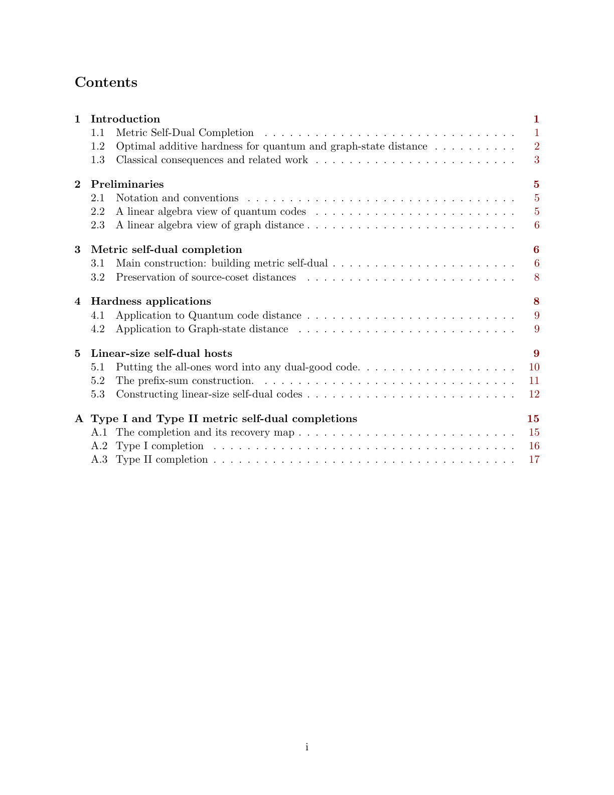
<figcaption class="paper-figure-caption"><b>Fig 1.</b> Low-resolution page preview, page 2</figcaption>
</figure>
<figure class="paper-figure-card">
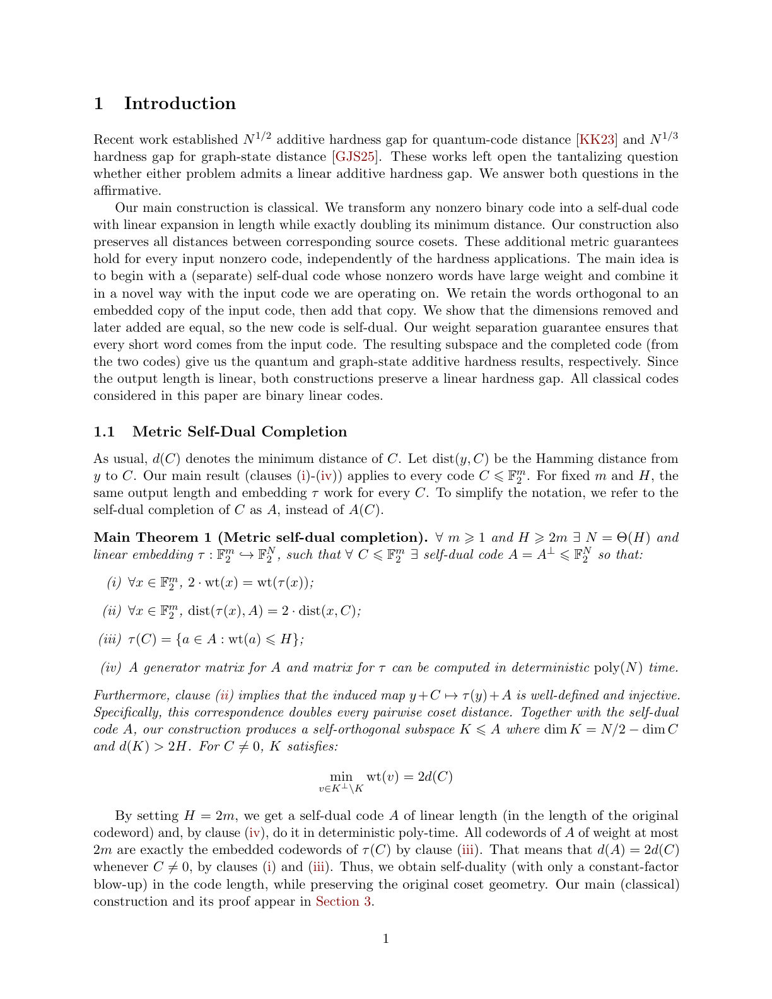
<figcaption class="paper-figure-caption"><b>Fig 2.</b> Low-resolution page preview, page 3</figcaption>
</figure>
<figure class="paper-figure-card">
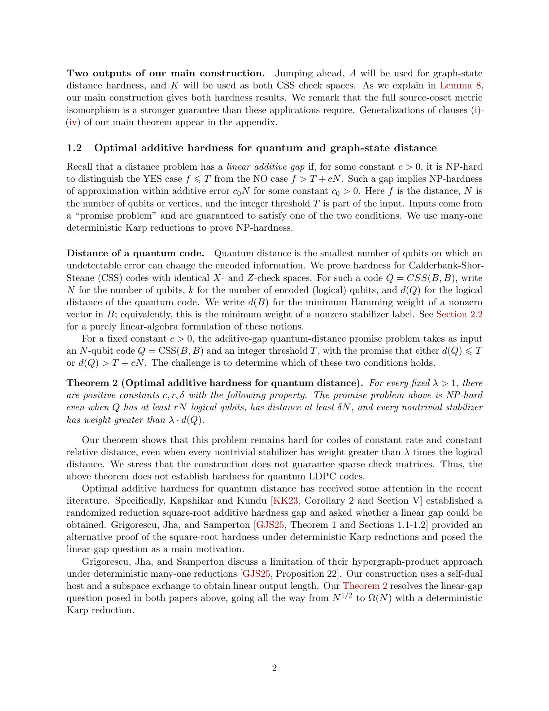
<figcaption class="paper-figure-caption"><b>Fig 3.</b> Low-resolution page preview, page 4</figcaption>
</figure>
<figure class="paper-figure-card">
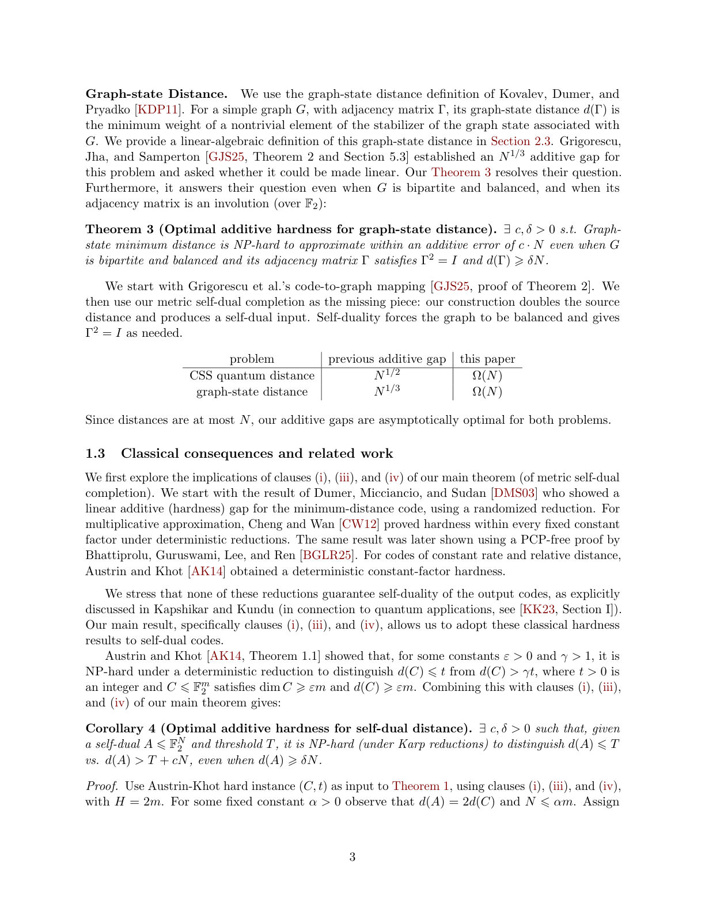
<figcaption class="paper-figure-caption"><b>Fig 4.</b> Low-resolution page preview, page 5</figcaption>
</figure>
<figure class="paper-figure-card">
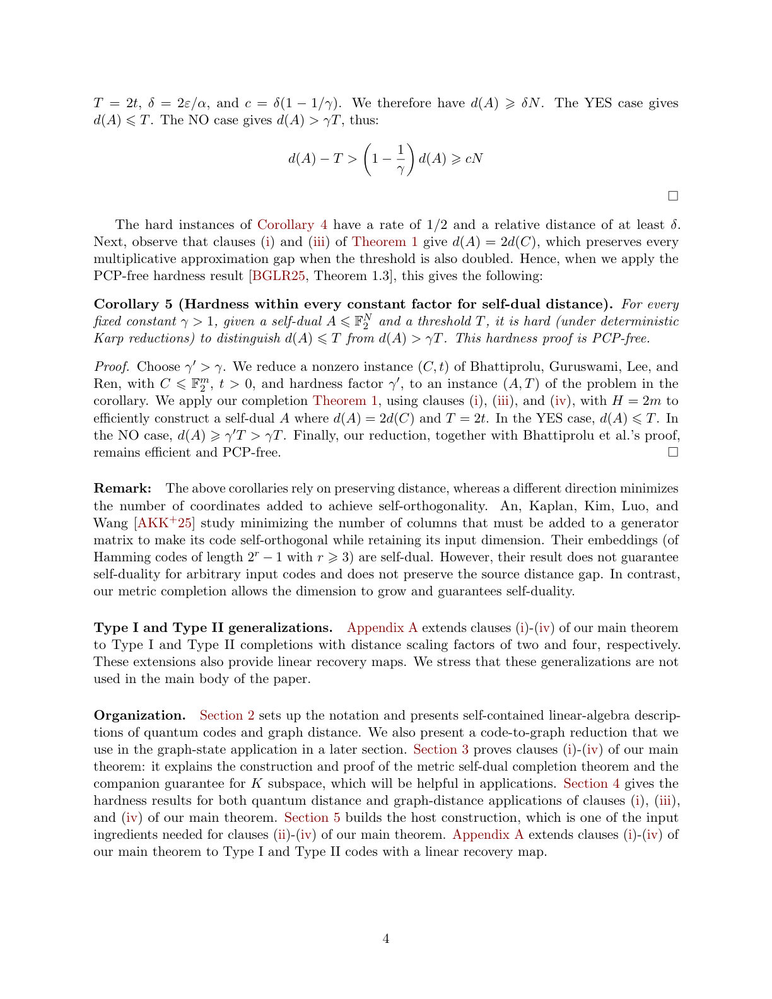
<figcaption class="paper-figure-caption"><b>Fig 5.</b> Low-resolution page preview, page 6</figcaption>
</figure>
</div>
<p><strong>Summary.</strong> This theoretical paper establishes that approximating the quantum code distance and the graph-state distance are computationally hard problems, showing an $\Omega(N)$ additive gap. The authors achieve this using a novel, deterministic technique called metric self-dual completion. This work significantly raises the known lower bounds for these critical metrics in quantum information science.</p>
<p><strong>Why it may be interesting.</strong> The results provide fundamental computational complexity bounds on the distinguishability of quantum error-correcting codes and graph states, which are central to quantum information theory and quantum computation.</p>
<details>
<summary>Detailed structure</summary>
<p><strong>Main problem.</strong> The paper aims to establish the optimal additive hardness gaps for approximating two distance problems: the quantum code distance and the graph-state distance.</p>
<p><strong>Main result.</strong> It proves that both the quantum code distance and the graph-state minimum distance are NP-hard to approximate within an additive error of $\Omega(N)$, significantly improving previous lower bounds.</p>
<p><strong>Method.</strong> The core technique is the 'Metric Self-Dual Completion,' a deterministic classical construction used to convert general codes into self-dual codes while exactly doubling the original coset metric, allowing the application of classical hardness reductions.</p>
<p><strong>Model / system.</strong> The study focuses on quantum error-correcting codes, specifically CSS codes with identical X- and Z-check spaces, and the graph-state distance defined by a graph's adjacency matrix $\Gamma$.</p>
<p><strong>Key observables.</strong> Quantum code distance ($d(Q)$) and graph-state minimum distance ($d(\Gamma)$).</p>
<p><strong>Important parameters / regimes.</strong> N (number of qubits/vertices), additive error gap ($c N$), and code parameters like rate and relative distance.</p>
<p><strong>Assumptions / limitations.</strong> The quantum hardness result holds for CSS codes with constant rate and constant relative distance. The graph-state result holds for balanced bipartite graphs with $\Gamma^2 = I$.</p>
<p><strong>Paper structure.</strong> The paper first introduces the metric self-dual completion construction, detailing its properties. It then applies this construction to derive the NP-hardness results for the quantum code distance and the graph-state distance, respectively.</p>
</details>
<details>
<summary>Abstract</summary>
<p>We prove that the quantum code distance is NP-hard to approximate within an additive error of $c N$, for some constant $c >0$, where $N$ is the number of qubits. Our reductions are deterministic. This improves the previous square-root additive gap to $Ω(N)$ and resolves the explicitly stated linear-gap question of Kapshikar and Kundu. Our result holds for CSS codes with identical $X$- and $Z$-check spaces, and with a constant rate and constant relative distance. For every fixed $λ>1$, there is a constant $c>0$ such that hardness still holds even when every nonidentity stabilizer has weight greater than $λ$ times the quantum distance. We also improve the hardness gap of graph state distance on $N$ vertices of Grigorescu, Jha, and Samperton from cube-root to $Ω(N)$, resolving their explicitly stated open question. Both hardness results are asymptotically optimal since both distances are at most $N$. Our graph state distance hardness result holds for balanced bipartite graphs with a binary adjacency matrix that is its own inverse (mod 2).   Our main technique for both hardness bounds above is classical: we show how to convert any code $C$ of length $m$ into a self-dual code $A(C)$ of length $N=Θ(m)$ while exactly doubling the original coset metric. The conversion is deterministic and efficient. We call it the metric self-dual completion of $C$. It comes with a linear embedding $τ: \mathbb F_2^m \hookrightarrow \mathbb F_2^N$. The embedding doubles all Hamming distances between vectors in $\mathbb F_2^m$ and all pairwise distances between corresponding cosets. The embedding also guarantees that all codewords of $A(C)$ of weight at most $2m$ are exactly $τ(C)$.</p>
</details>
<p><sub><a href="#top">↑ back to top</a></sub></p>

<p><a id="paper-2609.23575"></a></p>
<h3 id="multiscale-modeling-of-ion-transport-in-nanopores-fitting-implicit-water-radial-diffusion-profiles-to-explicit-water-molecular-dynamics"><a href="http://arxiv.org/abs/2609.23575v1">Multiscale Modeling of Ion Transport in Nanopores: Fitting Implicit-Water Radial Diffusion Profiles to Explicit-Water Molecular Dynamics</a></h3>
<p><strong>Authors:</strong> Mónika Valiskó, Salman Shabbir, Eszter Molnárné Lakics, Zoltán Ható, Dezső Boda<br>
<strong>Type:</strong> theory · <strong>Category:</strong> statistical mechanics · <strong>PDF:</strong> <a href="https://arxiv.org/pdf/2609.23575v1">https://arxiv.org/pdf/2609.23575v1</a><br>
<strong>Analysis basis:</strong> full PDF text, analyzed in chunks</p>
<div class="figure-strip-hint">↔ Scroll figures horizontally</div>
<div class="paper-figures-scroll">
<figure class="paper-figure-card">
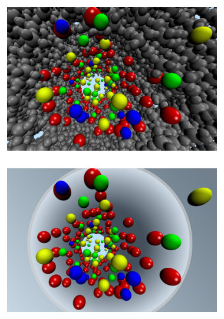
<figcaption class="paper-figure-caption"><b>Fig 1.</b> FIG. 1. Snapshots from (A) the MD simulation and (B) the LEMC simulation. Red, green, blue, and yellow spheres represent silanol oxygens, Ca2+, Na+, and Cl−, respectively. The two simulation setups are otherwise closely matched; the LEMC model replaces explicit water molecules with an im- plicit solvent and represents the membrane by smooth hard walls rather than by an atomistic model.</figcaption>
</figure>
<figure class="paper-figure-card">
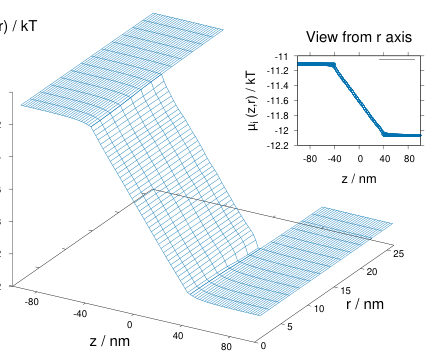
<figcaption class="paper-figure-caption"><b>Fig 2.</b> FIG. 2. Electrochemical potential over the (z, r) plane (main panel) of Ca2+ obtained from NP+LEMC and its view from the direction of the r axis (subset).</figcaption>
</figure>
<figure class="paper-figure-card">
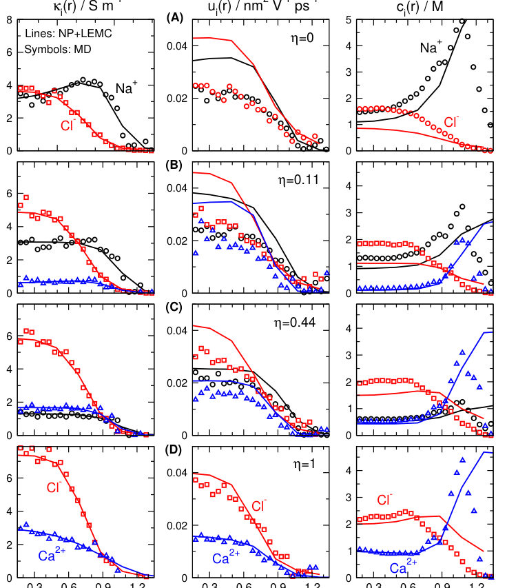
<figcaption class="paper-figure-caption"><b>Fig 3.</b> FIG. 3. From left to right: radial dependence of the axial components of electrical conductivity (obtained from the z-components of the flux density and electric field, see Eq. 7; unit is S/m), mobility (in nm2/V ps), and concentration (in mol/dm3) for mixtures of NaCl and CaCl2. Rows (A) to (D) refer to Ca2+ mole fractions η = 0, 0.11, 0.44, and 1, respectively. Results for other mole fractions are found in the SM. Black, blue, and red colors refer to Na+, Ca2+, and Cl−ions, respectively. The figure shows results for the full-charge silanol oxygen (OS) model. Results for the scaled-charge OS model are found in the SM. Symbols and lines refer to MD and NP+LEMC results, respectively.</figcaption>
</figure>
<figure class="paper-figure-card">
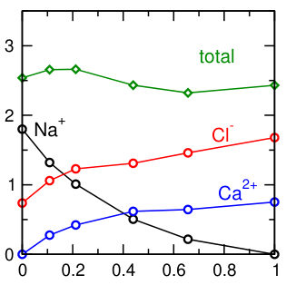
<figcaption class="paper-figure-caption"><b>Fig 4.</b> FIG. 4. Conductances of different ionic species and the total conductance (defined in Appendix A) as obtained from MD simulations as functions of Ca2+ mole fraction. Black, blue, and red colors refer to Na+, Ca2+, and Cl−ions, respectively. Error bars are smaller than the size of the symbols.</figcaption>
</figure>
<figure class="paper-figure-card">
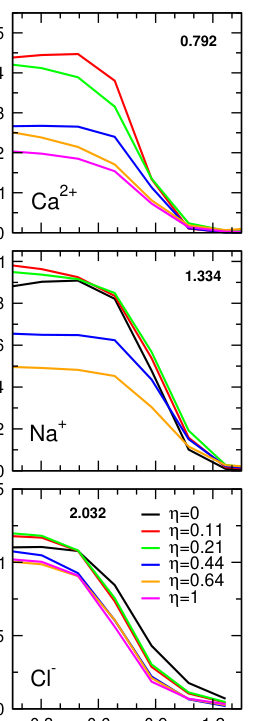
<figcaption class="paper-figure-caption"><b>Fig 5.</b> FIG. 5. Radial diffusion coefficient profiles in the pore as ob- tained from fitting the NP+LEMC conductivity profiles to MD conductivity profiles. Different panels refer to different ionic species, while different colors refer to different mole frac- tions. The numbers in the panels indicate the bulk values, DB i .</figcaption>
</figure>
</div>
<p><strong>Summary.</strong> This paper presents a multiscale methodology to model ion transport in nanopores by fitting radial diffusion profiles derived from detailed explicit-water Molecular Dynamics simulations into a reduced Nernst-Planck/LEMC framework. The approach successfully captures complex phenomena like near-wall mobility suppression and differential selectivity for $ ext{Na}^+$ versus $ ext{Ca}^{2+}$ ions. It is significant for developing accurate, efficient models for electrochemical devices operating at the nanoscale.</p>
<p><strong>Why it may be interesting.</strong> The work provides a rigorous method for bridging detailed molecular simulations (MD) with continuum electrochemistry models (NP equation), which is crucial for developing predictive, computationally tractable models for nanoscale devices.</p>
<details>
<summary>Detailed structure</summary>
<p><strong>Main problem.</strong> The paper develops a multiscale approach to accurately model ion transport in nanopores by incorporating molecular-scale information into computationally efficient continuum models.</p>
<p><strong>Main result.</strong> The derived effective diffusion coefficient profiles successfully reproduce the radial current distributions from explicit-water MD simulations, capturing crucial near-wall mobility suppression effects.</p>
<p><strong>Method.</strong> A radially varying effective diffusion coefficient profile is fitted to radial conductivity profiles obtained from explicit-water Molecular Dynamics (MD) simulations, implemented within the NP+LEMC framework.</p>
<p><strong>Model / system.</strong> The system is ion transport ($  ext{NaCl}$, $   ext{CaCl}_2$, mixtures) through negatively charged silica nanopores. The modeling involves comparing explicit-water MD results with reduced models based on the Nernst–Planck equation combined with Local Equilibrium Monte Carlo (LEMC).</p>
<p><strong>Key observables.</strong> Radial current density profiles ($j_i(r)$), radial conductivity profiles ($\kappa_i(r)$), and the fitted radial diffusion coefficient profiles ($D_i(r)$).</p>
<p><strong>Important parameters / regimes.</strong> Pore radius, surface charge density, external electric field strength, and the specific electrolyte composition ($  ext{NaCl}$ vs. $    ext{CaCl}_2$).</p>
<p><strong>Assumptions / limitations.</strong> The approach assumes that the molecular-scale information from explicit-water MD can be accurately parameterized into a spatially varying effective diffusion coefficient profile for use in the reduced continuum model.</p>
<p><strong>Figures summary.</strong> Figures compare radial profiles ($\sigma_i(r)$, $\mu_i(r)$, $c_i(r)$) and conductances ($G_i$) derived from different charge assignments (full vs. scaled) across various electrolyte mixtures, and show the final fitted $D_i(r)$ profiles.</p>
<p><strong>Paper structure.</strong> The paper establishes the need for multiscale modeling, details the MD simulations (explicit water, specific force fields), introduces the NP+LEMC framework, and then presents the fitting procedure and comparison of results for different salt mixtures and charge models.</p>
</details>
<details>
<summary>Abstract</summary>
<p>We develop a multiscale approach for incorporating molecular-scale transport information into computationally efficient models of ion transport through nanopores. A radially varying effective diffusion coefficient profile is fitted to radial conductivity profiles obtained from explicit-water molecular dynamics (MD) simulations. The fitting is performed within the NP+LEMC framework, which combines the Nernst--Planck equation with Local Equilibrium Monte Carlo to account for ion correlations beyond mean-field approximation. We apply the approach to NaCl, CaCl$_2$, and their mixtures in a negatively charged silica nanopore. The resulting diffusion coefficient profiles reproduce the radial current distributions of the MD simulations, including the strong suppression of ionic mobility near the pore wall that cannot be captured by a spatially constant diffusion coefficient inside the pore. NaCl and CaCl$_2$ exhibit qualitatively different transport behavior: the former is cation selective due to enhanced near-wall Na$^+$ conduction, whereas the latter shows weak anion selectivity because strongly bound Ca$^{2+}$ ions have strongly suppressed mobility near the surface. For NaCl--CaCl$_2$ mixtures, preferential Ca$^{2+}$ binding leads to nonlinear changes in ionic conductance. The approach establishes a bridge between experimentally relevant device behavior and computationally efficient reduced models, with explicit-water MD providing the molecular-scale information that can be incorporated into the effective transport coefficients.</p>
</details>
<p><sub><a href="#top">↑ back to top</a></sub></p>

<p><a id="paper-2609.24291"></a></p>
<h3 id="new-lower-bounds-for-cds-and-math1634math-routing"><a href="http://arxiv.org/abs/2609.24291v1">New lower bounds for CDS and $f$-routing</a></h3>
<p><strong>Authors:</strong> Atsuya Hasegawa, Ranitha Mataraarachchi<br>
<strong>Type:</strong> theory · <strong>Category:</strong> quantum information and computing · <strong>PDF:</strong> <a href="https://arxiv.org/pdf/2609.24291v1">https://arxiv.org/pdf/2609.24291v1</a><br>
<strong>Analysis basis:</strong> full PDF text, analyzed in chunks</p>
<div class="figure-strip-hint">↔ Scroll figures horizontally</div>
<div class="paper-figures-scroll">
<figure class="paper-figure-card">
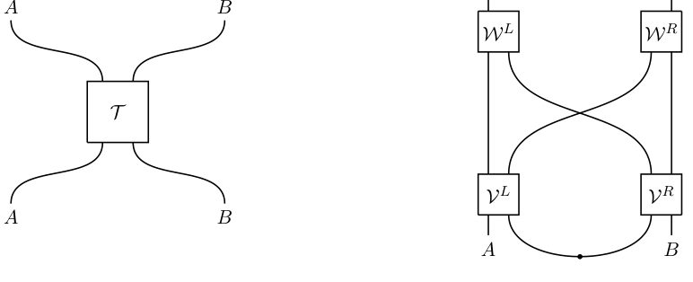
<figcaption class="paper-figure-caption"><b>Fig 1.</b> Figure 1: Local and non-local computations. a) A channel TAB→AB is implemented by directly interacting the input systems. b) A non-local quantum computation. The goal is for this circuit’s action on the AB systems to approximate the channel TAB→AB. Figure reproduced from [ACM25].</figcaption>
</figure>
<figure class="paper-figure-card">
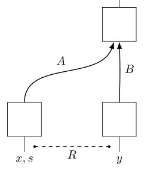
<figcaption class="paper-figure-caption"><b>Fig 2.</b> Figure 2: The CDS task. Alice (left) receives (x, s) and Bob (right) receives y. Using a shared random variable R, they send messages a and b to the referee (top), who recovers s if and only if f(x, y) = 1.</figcaption>
</figure>
</div>
<p><strong>Summary.</strong> This paper derives strong lower bounds for the entanglement cost of non-local quantum computation tasks, particularly $f$-routing, and for the shared randomness required in Conditional Disclosure of Secrets (CDS). By connecting these two problems, the authors establish bounds based on the sign rank of associated Boolean matrices, advancing the understanding of quantum information complexity.</p>
<p><strong>Why it may be interesting.</strong> The work provides rigorous, information-theoretic lower bounds for fundamental quantum tasks, which can guide the design of quantum protocols and test the limits of quantum communication complexity.</p>
<details>
<summary>Detailed structure</summary>
<p><strong>Main problem.</strong> The paper establishes lower bounds on the entanglement cost for Non-Local Quantum Computation (NLQC) tasks, specifically focusing on $f$-routing and Conditional Disclosure of Secrets (CDS).</p>
<p><strong>Main result.</strong> They derive a general lower bound for one-sided-perfect $f$-routing based on the sign rank of the associated matrix, and establish a shared-randomness lower bound for robust CDS.</p>
<p><strong>Method.</strong> The authors utilize techniques involving the sign rank of Boolean matrices and establish connections between the randomness complexity of CDS and the entanglement cost of $f$-routing.</p>
<p><strong>Model / system.</strong> The study analyzes abstract quantum information tasks: $f$-routing (a non-local computation task) and CDS (a secure multi-party computation primitive). These tasks are modeled using quantum communication protocols involving shared entangled states.</p>
<p><strong>Key observables.</strong> Entanglement cost ($\log d_E$), Shared-randomness cost ($\log q$), Sign rank ($  ext{signrank}(S_f)$), and Deterministic SMP communication complexity ($D_{\parallel}(f)$).</p>
<p><strong>Important parameters / regimes.</strong> The bounds are derived for one-sided-perfect protocols, and the results are shown to be tight for specific functions like the equality function.</p>
<p><strong>Assumptions / limitations.</strong> The analysis relies on the connection between CDS and $f$-routing, and the use of the sign-rank method, which is most directly applicable to one-sided-perfect settings.</p>
<p><strong>Figures summary.</strong> Figure 1 illustrates the setup for local vs. non-local quantum computation. Figure 2 illustrates the setup for the Conditional Disclosure of Secrets (CDS) task.</p>
<p><strong>Paper structure.</strong> The paper first addresses the robust CDS lower bound using shared randomness, connecting it to deterministic communication complexity. It then tackles one-sided-perfect $f$-routing by exploiting the positivity of the low-rank matrix, yielding a bound in terms of sign rank, and finally relates these bounds across different complexity measures.</p>
</details>
<details>
<summary>Abstract</summary>
<p>Understanding the entanglement cost of non-local quantum computation (NLQC) is relevant to complexity theory, cryptography, quantum gravity, and related areas. A central special case is $f$-routing, motivated in part by quantum position verification. Proving lower bounds on its entanglement cost in the fully robust setting has been a major open problem in NLQC.   Motivated by this problem, we establish two related lower bounds. First, we study the shared-randomness cost of robust conditional disclosure of secrets (CDS). The connection between CDS and $f$-routing established by Allerstorfer et al. (Quantum 2024) makes understanding the randomness complexity of robust CDS a natural step toward lower bounds for the fully robust routing problem. We show that the shared-randomness cost of robust CDS is lower bounded by the logarithm of deterministic SMP communication complexity, even when communication and private randomness are unrestricted. Our lower bound is tight for the equality function.   Second, we consider one-sided-perfect $f$-routing, in which the protocol is exact on one input class and has constant error on the other. By exploiting the positivity of the low-rank matrix arising in the method of Asadi, Culf, and May (ITCS 2025), we derive a general lower bound on the entanglement cost in terms of sign rank. In particular, this yields a linear lower bound on the entanglement cost of routing for the inner-product function in both one-sided-perfect settings, matching the known upper bound.</p>
</details>
<p><sub><a href="#top">↑ back to top</a></sub></p>

<p><a id="paper-2609.24459"></a></p>
<h3 id="on-the-dual-character-of-zn-impurity-in-snte-tuning-thermoelectric-and-topological-properties"><a href="http://arxiv.org/abs/2609.24459v1">On the dual character of Zn impurity in SnTe: Tuning thermoelectric and topological properties</a></h3>
<p><strong>Authors:</strong> Kacper Pryga, Bartlomiej Wiendlocha<br>
<strong>Type:</strong> theory · <strong>Category:</strong> other · <strong>PDF:</strong> <a href="https://arxiv.org/pdf/2609.24459v1">https://arxiv.org/pdf/2609.24459v1</a><br>
<strong>Analysis basis:</strong> full PDF text, analyzed in chunks</p>
<div class="figure-strip-hint">↔ Scroll figures horizontally</div>
<div class="paper-figures-scroll">
<figure class="paper-figure-card">
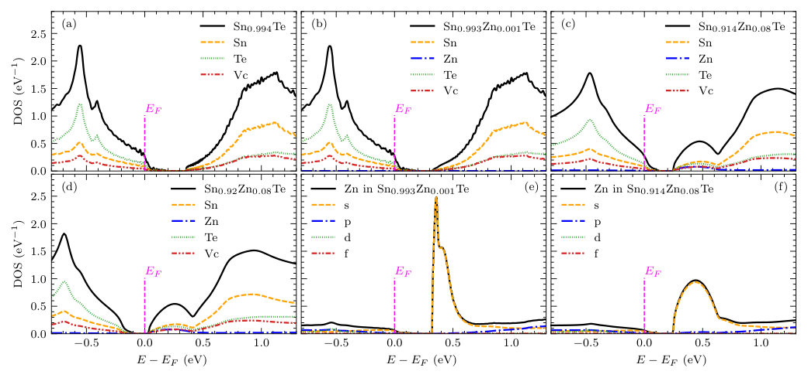
<figcaption class="paper-figure-caption"><b>Fig 1.</b> FIG. 1. Calculated density of states (DOS) near EF for SnTe with 0.6% Sn vacancies: (a) without doping; (b) doped with 0.1% Zn, with partial density of states (PDOS) in panel (e); (c) doped with 8% Zn, with PDOS in panel (f). In panel (d) SnTe with 8% Zn without vacancies is shown. Partial DOS (panels d and e) is weighted per impurity atom (i.e. does not include concentration).</figcaption>
</figure>
<figure class="paper-figure-card">
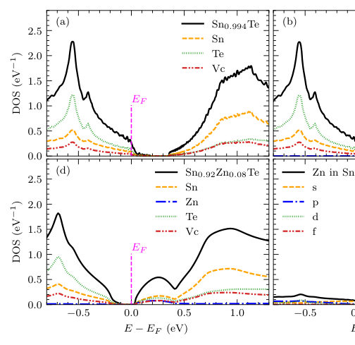
<figcaption class="paper-figure-caption"><b>Fig 2.</b> Figure 1 presents the computed electronic density of states (DOS) of SnTe with and without Zn impurity. To take into account that the synthesized samples of SnTe always contain p-type Sn vacancies, 0.6% of vacancies on the Sn site were included in each calculated variant. This amount of vacancies, which here act as two-hole accep- tors, corresponds to the carrier concentration of 1.9×1020</figcaption>
</figure>
<figure class="paper-figure-card">

<figcaption class="paper-figure-caption"><b>Fig 3.</b> FIG. 3. Evolution of total DOS near EF for Sn0.994−xZnxTe with Zn doping.</figcaption>
</figure>
<figure class="paper-figure-card">
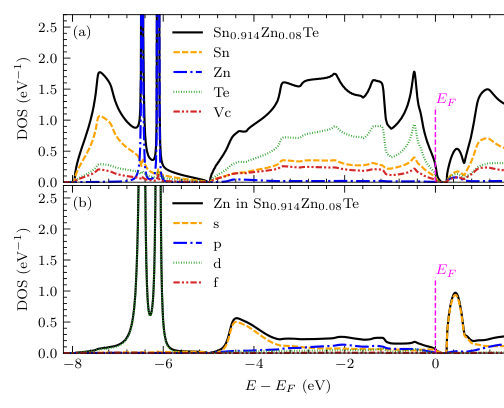
<figcaption class="paper-figure-caption"><b>Fig 4.</b> FIG. 2. (a) Calculated density of states (DOS) for Sn0.914Zn0.08Te in broad range of energy with partial DOS of Zn (panel b) weighted per impurity atom.</figcaption>
</figure>
<figure class="paper-figure-card">
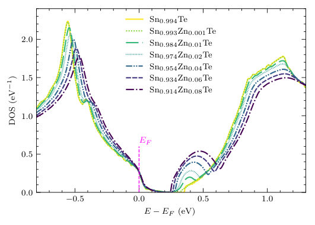
<figcaption class="paper-figure-caption"><b>Fig 5.</b> Figure 4 presents the Bloch spectral density func- tions along high-symmetry directions in the form of two-</figcaption>
</figure>
</div>
<p><strong>Summary.</strong> This theoretical study investigates how doping SnTe with Zn affects its electronic and topological properties. The authors show that Zn introduces a resonant impurity state that boosts thermoelectric performance, while simultaneously inducing a controllable topological phase transition in the band structure. This work establishes doping as a powerful mechanism for multiscale property tuning in chalcogenide semiconductors.</p>
<p><strong>Why it may be interesting.</strong> While focused on solid-state physics, the concept of tuning electronic properties (like band gaps or topological invariants) via controlled disorder or doping is relevant to understanding engineered quantum materials.</p>
<details>
<summary>Detailed structure</summary>
<p><strong>Main problem.</strong> To clarify the microscopic role of Zn doping in SnTe and demonstrate that doping can simultaneously tune both the thermoelectric and topological properties of the material.</p>
<p><strong>Main result.</strong> Zn doping introduces a resonant-like impurity state that enhances thermopower in n-type SnTe, while band structure modifications drive a controllable topological phase transition from an inverted to a trivial band ordering.</p>
<p><strong>Method.</strong> The study uses first-principles calculations, specifically the Korringa-Kohn-Rostoker method within the coherent potential approximation, complemented by pseudopotential calculations.</p>
<p><strong>Model / system.</strong> The physical system is Zn-doped SnTe ($ ext{SnTe}:  ext{Zn}$), a lead-free analogue of PbTe, which is studied as a candidate thermoelectric material.</p>
<p><strong>Key observables.</strong> Thermopower (Seebeck coefficient), resonant-like impurity state formation, L–Σ band convergence, and the transition between inverted and trivial band ordering.</p>
<p><strong>Important parameters / regimes.</strong> Zn concentration, Fermi level position, and the electronic structure evolution across different doping levels.</p>
<p><strong>Assumptions / limitations.</strong> The analysis assumes that the p-type character is primarily derived from Sn vacancies, and that the Zn substitution itself does not alter the carrier concentration if vacancies are ignored.</p>
<p><strong>Figures summary.</strong> Figures illustrate the evolution of the Density of States (DOS) showing the resonant 'hump' growth with Zn concentration, and band structure analysis confirming the topological phase transition.</p>
<p><strong>Paper structure.</strong> The paper systematically analyzes the electronic structure using advanced computational methods to link the introduction of Zn impurities to changes in both transport properties (thermoelectric) and band topology.</p>
</details>
<details>
<summary>Abstract</summary>
<p>We present a first-principles study of the electronic structure and thermoelectric properties of Zn-doped SnTe using the Korringa-Kohn-Rostoker method within the coherent potential approximation, complemented by pseudopotential calculations. SnTe is a lead-free analogue of PbTe and a candidate thermoelectric material in which Zn doping has been experimentally reported to enhance the performance of $p$-type samples. We show that Zn introduces a resonant-like impurity state, located within the conduction band, which evolves strongly depending on the Zn concentration. This feature leads to a significant enhancement of the thermopower in $n$-type SnTe. In the valence band, Zn doping induces L-$Σ$ band convergence, also resulting in an increased $p$-type Seebeck coefficient over a broad concentration range and delaying the onset of the bipolar effect. We further demonstrate that the Zn-induced band-structure modifications drive a transition from an inverted to a trivial band ordering, indicating a controllable topological phase transition. Our results clarify the microscopic role of Zn in SnTe and identify doping as a mechanism for simultaneously tuning thermoelectric and topological properties.</p>
</details>
<p><sub><a href="#top">↑ back to top</a></sub></p>

<p><a id="paper-2609.23657"></a></p>
<h3 id="qaoa-based-pilot-assignment-for-cell-free-massive-mimo-systems"><a href="http://arxiv.org/abs/2609.23657v1">QAOA-Based Pilot Assignment for Cell-Free Massive MIMO Systems</a></h3>
<p><strong>Authors:</strong> Xiaoyu Ma, Fang Fang, Xianbin Wang<br>
<strong>Type:</strong> theory · <strong>Category:</strong> quantum information and computing · <strong>PDF:</strong> <a href="https://arxiv.org/pdf/2609.23657v1">https://arxiv.org/pdf/2609.23657v1</a><br>
<strong>Analysis basis:</strong> full PDF text, analyzed in chunks</p>
<div class="figure-strip-hint">↔ Scroll figures horizontally</div>
<div class="paper-figures-scroll">
<figure class="paper-figure-card">
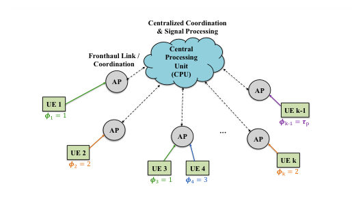
<figcaption class="paper-figure-caption"><b>Fig 1.</b> Fig. 1. Uplink pilot assignment in a cell-free massive MIMO system with centralized coordination.</figcaption>
</figure>
<figure class="paper-figure-card">
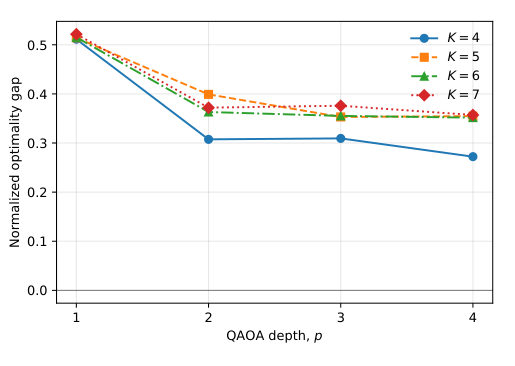
<figcaption class="paper-figure-caption"><b>Fig 2.</b> Fig. 3. Normalized optimality gap versus QAOA depth for different numbers of UEs.</figcaption>
</figure>
<figure class="paper-figure-card">
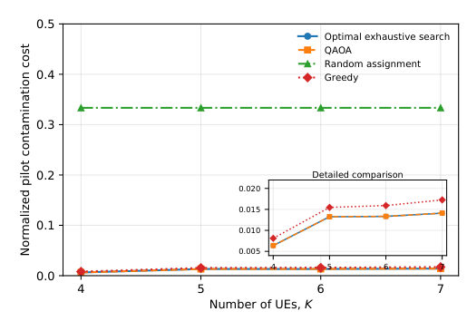
<figcaption class="paper-figure-caption"><b>Fig 3.</b> Fig. 2. Normalized pilot contamination cost versus the number of UEs with p = 3.</figcaption>
</figure>
</div>
<p><strong>Summary.</strong> This paper tackles the pilot assignment problem in massive MIMO systems, which is difficult to solve classically due to exponential complexity. It reformulates this optimization problem into a quantum Hamiltonian and solves it using the QAOA algorithm. The results demonstrate that the quantum approach yields near-optimal solutions, highlighting the potential of quantum computing for wireless resource management.</p>
<p><strong>Why it may be interesting.</strong> While the application is in wireless communications, the core methodology—encoding a complex combinatorial optimization problem into a Hamiltonian and solving it with QAOA—is a direct application of quantum algorithms for constrained optimization.</p>
<details>
<summary>Detailed structure</summary>
<p><strong>Main problem.</strong> The paper addresses the computationally hard problem of minimizing pilot contamination in cell-free massive MIMO systems due to unavoidable pilot reuse.</p>
<p><strong>Main result.</strong> The proposed QAOA-based framework successfully encodes the optimization problem, achieving performance close to exhaustive search in simulations.</p>
<p><strong>Method.</strong> The problem is reformulated as a binary quadratic optimization problem and solved using the Quantum Approximate Optimization Algorithm (QAOA) with a constraint-aware mixer Hamiltonian.</p>
<p><strong>Model / system.</strong> The system modeled is a cell-free massive MIMO network. The optimization involves assigning pilots ($\phi$) to UEs ($K$) to minimize the weighted pilot contamination cost $C(\phi)$.</p>
<p><strong>Key observables.</strong> Normalized pilot contamination cost ($ar{C}(\phi)$) and Normalized optimality gap ($G_p$).</p>
<p><strong>Important parameters / regimes.</strong> Number of UEs ($K$), number of available pilots ($ au_p$), and QAOA parameters ($\gamma, eta$).</p>
<p><strong>Assumptions / limitations.</strong> The approach assumes that QAOA can effectively solve the combinatorial optimization problem, and a feasibility-preserving mixer Hamiltonian is used to enforce constraints.</p>
<p><strong>Figures summary.</strong> Figure 2 shows the normalized pilot contamination cost vs. number of UEs for $p=3$. Figure 3 shows the normalized optimality gap vs. QAOA depth ($p$).</p>
<p><strong>Paper structure.</strong> The paper first defines the physical problem (pilot contamination) and reformulates it into a quantum-compatible optimization problem using cost and mixer Hamiltonians. It then details the QAOA implementation and presents simulation results comparing it against classical benchmarks.</p>
</details>
<details>
<summary>Abstract</summary>
<p>Pilot contamination is a major challenge in cell-free massive multiple-input multiple-output (MIMO) systems, where the limited number of orthogonal pilots makes pilot reuse unavoidable. Since the pilot assignment solution space grows exponentially with the number of users, finding the global optimum becomes computationally challenging on classical computers. Recent advances in quantum computing provide a promising approach for solving such large-scale combinatorial optimization problems. In this paper, we reformulate the assignment problem as a quantum-compatible optimization problem, enabling it to be directly solved by the Quantum Approximate Optimization Algorithm (QAOA). Specifically, the pilot contamination objective and assignment constraints are incorporated into the QAOA formulation. This allows the quantum search to focus on valid pilot assignments with low contamination cost. Simulation results show that the proposed method achieves performance close to exhaustive search, demonstrating the potential of quantum-assisted optimization for pilot assignment in future wireless systems.</p>
</details>
<p><sub><a href="#top">↑ back to top</a></sub></p>

<p><a id="paper-2609.23664"></a></p>
<h3 id="quwarp-a-workload-aware-reuse-planner-for-simulating-quantum-circuits"><a href="http://arxiv.org/abs/2609.23664v1">QuWARP: A Workload-Aware Reuse Planner for simulating Quantum Circuits</a></h3>
<p><strong>Authors:</strong> Tim Littau, Rihan Hai<br>
<strong>Type:</strong> theory · <strong>Category:</strong> quantum information and computing · <strong>PDF:</strong> <a href="https://arxiv.org/pdf/2609.23664v1">https://arxiv.org/pdf/2609.23664v1</a><br>
<strong>Analysis basis:</strong> full PDF text, analyzed in chunks</p>
<div class="figure-strip-hint">↔ Scroll figures horizontally</div>
<div class="paper-figures-scroll">
<figure class="paper-figure-card">
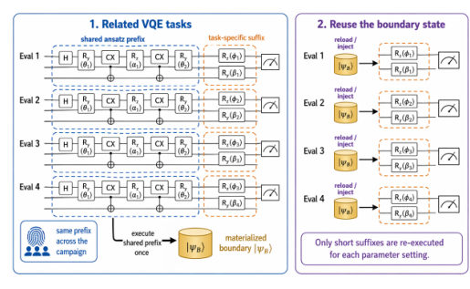
<figcaption class="paper-figure-caption"><b>Fig 1.</b> Fig. 1. Example workload-level reuse pattern. Four related VQE evaluations share the same ansatz prefix but differ only in short parameter-specific suffixes. QuWARP executes the shared prefix once, materializes the boundary state |ψB⟩, and reloads or injects it before each suffix so only the short task-specific suffixes are re-executed.</figcaption>
</figure>
<figure class="paper-figure-card">
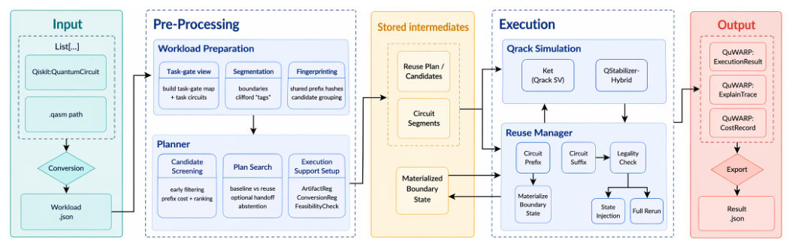
<figcaption class="paper-figure-caption"><b>Fig 2.</b> Fig. 2. QuWARP architecture for workload-level simulation reuse. Inputs from circuits or workload specifications are normalized into a workload representation, pre-processed into planner metadata, planned for reuse, executed on the bounded Qrack surface, and emitted together with result, EXPLAIN, and realized-cost artifacts.</figcaption>
</figure>
<figure class="paper-figure-card">
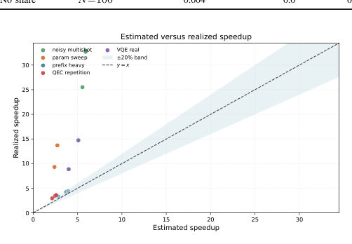
<figcaption class="paper-figure-caption"><b>Fig 3.</b> Fig. 3. Estimated-versus-realized workload speedup for all evaluated workloads. Each point is one workload; the x-axis is estimated speedup and the y-axis is realized speedup against direct per-task Qrack. The diagonal denotes perfect calibration and the shaded band marks close agreement. All points lie above the diagonal, so the current gate-count proxy underestimates gains while still placing workloads on the correct side of the reuse boundary.</figcaption>
</figure>
<figure class="paper-figure-card">
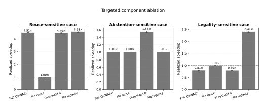
<figcaption class="paper-figure-caption"><b>Fig 4.</b> Fig. 4. Targeted planner-component ablation on the cases where each mechanism matters. Removing reuse collapses the reuse-positive workload to the direct baseline; removing the abstention gate admits a marginal near- break-even plan; removing legality on the illegal-continuation case permits an unsafe unsupported handoff instead of QuWARP’s refusal and fallback. Error bars show five reruns.</figcaption>
</figure>
</div>
<p><strong>Summary.</strong> This paper introduces QuWARP, a novel workload-aware planner designed to optimize quantum circuit simulations by identifying and safely reusing shared computational prefixes across related tasks. By treating simulation as a planning problem rather than isolated runs, QuWARP achieves substantial speedups while maintaining rigorous correctness guarantees through auditable legality checks.</p>
<p><strong>Why it may be interesting.</strong> This work directly addresses the computational bottleneck in running quantum algorithms by treating the simulation as a resource management problem, which is highly relevant for developing scalable quantum software stacks.</p>
<details>
<summary>Detailed structure</summary>
<p><strong>Main problem.</strong> The primary problem is the inefficiency of quantum circuit simulation when running many related tasks, as existing simulators fail to reuse shared computational state across these tasks.</p>
<p><strong>Main result.</strong> QuWARP achieves significant speedups (up to 32.84x) on reuse-positive workloads by implementing a workload-level planning layer that safely identifies and materializes shared computational prefixes.</p>
<p><strong>Method.</strong> The authors propose QuWARP, a planner that analyzes a sequence of related quantum tasks, identifies shared prefixes, and uses a cost-benefit analysis to decide whether to reuse a materialized boundary state or recompute the work.</p>
<p><strong>Model / system.</strong> The system simulates quantum circuits using an existing framework (Qrack) and operates on both statevector and stabilizer-hybrid representations. It plans over a sequence of related tasks (e.g., VQE sweeps, QEC cycles) rather than isolated circuits.</p>
<p><strong>Key observables.</strong> Speedups (2.95x–32.84x), auditable EXPLAIN-style traces detailing reuse decisions (reuse, abstain, refuse), and cost records.</p>
<p><strong>Important parameters / regimes.</strong> The profitability of reuse is governed by a cost model comparing saved prefix work against materialization and reload overheads.</p>
<p><strong>Assumptions / limitations.</strong> The validated reuse surface is intentionally narrow, limited to specific continuation types within the Qrack framework, and the planner is designed to be conservatively correct.</p>
<p><strong>Figures summary.</strong> Figure 1 illustrates the core concept of prefix reuse in VQE sweeps. Other figures detail the planning flow, legality checks, and ablation studies demonstrating the necessity of the planner's components.</p>
<p><strong>Paper structure.</strong> The paper introduces the problem of redundant computation in quantum simulation, proposes the QuWARP planner, details its workload-level planning mechanism (including legality checks and cost modeling), presents empirical results showing speedups, and concludes by discussing the scope and limitations of the approach.</p>
</details>
<details>
<summary>Abstract</summary>
<p>Quantum circuit simulation often appears as repeated-run workloads rather than isolated circuits: variational quantum eigensolver (VQE) sweeps, noisy multishot studies, and quantum error correction (QEC) cycles revisit closely related structure across many runs. Existing simulators optimise individual executions well, but they largely ignore cross-task shared state and therefore repeat work that could be reused safely. We propose QuWARP, a planner-based workload optimiser for a bounded state of the art simulator execution surface: it performs workload-level planning over related tasks, identifies shared prefixes, and chooses when to materialize exact typed boundary artifacts for later reuse across the evaluated statevector mode, and stabilizer-hybrid mode. Its planner treats continuation legality as a narrow correctness guardrail, abstains when reuse is unprofitable, and keeps each reuse, abstention, or refusal decision auditable through EXPLAIN-style traces, meaning inspectable planner reports with provenance and realized-cost summaries. Across real world quantum application workloads QuWARP delivers 2.95x-32.84x speedups over this work's main direct per-task Qrack denominator on reuse-positive workloads. These results show workload-level reuse planning improves repeated-run simulation while keeping unsupported handoffs auditable and out of the execution path.</p>
</details>
<p><sub><a href="#top">↑ back to top</a></sub></p>

<p><a id="paper-2609.23243"></a></p>
<h3 id="resource-and-entanglement-study-of-a-hybrid-qudit-qubit-quantum-algorithm-for-solving-the-integer-programming-problem"><a href="http://arxiv.org/abs/2609.23243v1">Resource and entanglement study of a hybrid qudit-qubit quantum algorithm for solving the integer programming problem</a></h3>
<p><strong>Authors:</strong> Kapil Goswami, Rick Mukherjee, Peter Schmelcher<br>
<strong>Type:</strong> theory · <strong>Category:</strong> quantum information and computing · <strong>PDF:</strong> <a href="https://arxiv.org/pdf/2609.23243v1">https://arxiv.org/pdf/2609.23243v1</a><br>
<strong>Analysis basis:</strong> full PDF text, analyzed in chunks</p>
<div class="figure-strip-hint">↔ Scroll figures horizontally</div>
<div class="paper-figures-scroll">
<figure class="paper-figure-card">
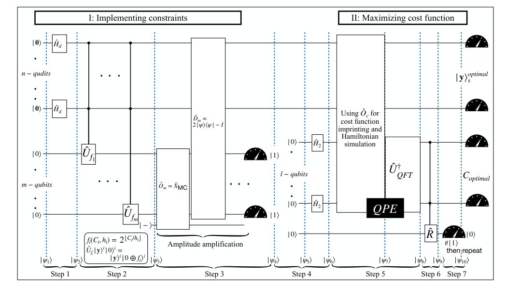
<figcaption class="paper-figure-caption"><b>Fig 1.</b> Figure 1: The schematic circuit for the quantum algorithm to solve a general IP problem with n variables and m constraints. The stage I implements all the constraints, the stage II maximizes the cost function and the measurements at the end are probabilistic. The n-qudit register stores the integer variables, and the m-qubit register indicates the satisfiability of the constraints. The subroutines for the constraints satisfying stage include n-Hadamard gates ˆHd for qudits, m one-sparse entangling unitary operators ˆU fi in sequence, ∼dn/2 times application of the Grover operator ˆOm · ˆDm for amplitude amplification, and m-measurements for the qubit register. The subroutines for the next...</figcaption>
</figure>
<figure class="paper-figure-card">
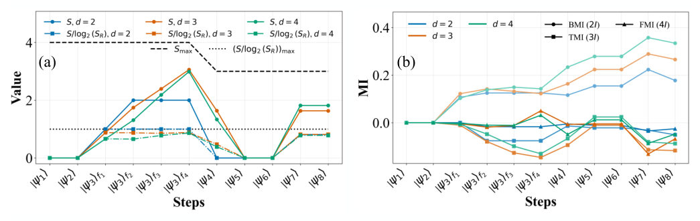
<figcaption class="paper-figure-caption"><b>Fig 2.</b> Figure 2: Entanglement study for solving the example problem given by Eq. (1) (a) von Neumann entropy S across the qudit-qubit bipartition (solid lines) and the normalized ratio S/ log2(S R) (dash-dotted lines) at each step of the algorithm, for qudit dimension d = 2 (blue), d = 3 (orange), and d = 4 (green). The dashed black line marks the dimension-imposed maximum entropy S max, and the dotted black line marks (S/ log2(S R))max = 1, the maximum entropy achievable given the Schmidt rank S R realized at that step. S/ log2(S R) →1 indicates a state that is maximally entangled for its own Schmidt rank, not relative to the full Hilbert-space dimension. States |ψ3⟩f1-|ψ3⟩f4 label the...</figcaption>
</figure>
<figure class="paper-figure-card">
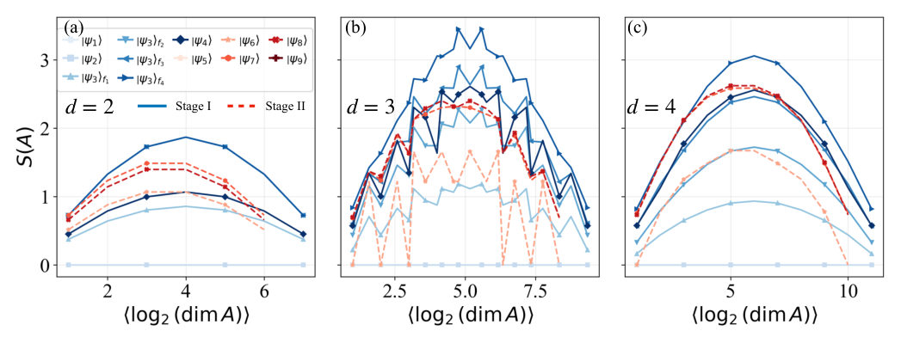
<figcaption class="paper-figure-caption"><b>Fig 3.</b> Figure 3: Growth of the reduced-state entropy S (A) with subsystem size ⟨log2(dim A)⟩, averaged over all subsystems of a given size formed from qudits and qubits, for d = 2 [(a)], d = 3 [(b)], and d = 4 [(c)]. Solid curves are Stage-I states and dashed curves are Stage-II states. The growth curves are calculated while solving the example problem given by Eq. (1).</figcaption>
</figure>
</div>
<p><strong>Summary.</strong> This work investigates a hybrid qudit-qubit quantum algorithm for solving Integer Programming problems. It demonstrates that using qudits provides substantial resource savings compared to simulating the system purely with qubits. Furthermore, the analysis confirms that the algorithm generates complex, high-order entanglement, suggesting it is computationally hard for classical simulation.</p>
<p><strong>Why it may be interesting.</strong> While focused on computation, the analysis of entanglement structure (volume-law growth, high-order entanglement) provides insights into the complexity and non-local correlations generated by quantum circuits, which is relevant to understanding quantum dynamics in many-body systems.</p>
<details>
<summary>Detailed structure</summary>
<p><strong>Main problem.</strong> The paper analyzes a hybrid qudit-qubit quantum algorithm designed to solve the NP-hard Integer Programming (IP) problem.</p>
<p><strong>Main result.</strong> The hybrid qudit-qubit approach offers significant resource advantages (e.g., up to 2220x fewer resources) over qubit-only simulations, and the generated entanglement suggests the problem is classically intractable.</p>
<p><strong>Method.</strong> The study employs comparative resource analysis (logical and fault-tolerant gate counts) and entanglement diagnostics (entropy growth, entanglement spectrum) to characterize the algorithm's efficiency and complexity.</p>
<p><strong>Model / system.</strong> The model is a hybrid quantum circuit combining qudits (d-dimensional systems) and qubits to solve a general IP problem, involving stages for constraint satisfaction and cost function optimization.</p>
<p><strong>Key observables.</strong> Logical gate counts, fault-tolerant physical resource requirements, volume-law-like entropy growth, and multi-partite entanglement signatures.</p>
<p><strong>Important parameters / regimes.</strong> Qudit dimension ($d$), number of variables ($n$), and the ratio of resources required for qudit vs. qubit encoding.</p>
<p><strong>Assumptions / limitations.</strong> The resource analysis relies on a simplified fault-tolerant resource model, and the comparison assumes the necessity of fault-tolerance overhead.</p>
<p><strong>Figures summary.</strong> Figure 1 schematically illustrates the seven steps of the quantum algorithm. Other figures likely show the entanglement spectrum evolution across algorithm stages.</p>
<p><strong>Paper structure.</strong> The paper proceeds by first introducing the algorithm, then performing a detailed resource comparison between qudit-native and qubit-encoded versions, followed by an in-depth entanglement analysis to prove computational hardness.</p>
</details>
<details>
<summary>Abstract</summary>
<p>Recently, a hybrid qudit-qubit algorithm [1] was presented for solving the integer programming problem with a polynomial quantum advantage. In this work, we investigate the algorithm [1] to understand the role of qudits ($d$-dimensional quantum system) by conducting a comparative resource analysis with its qubit-only implementation and the classical simulability of the algorithm by exploring the entanglement structure. The resource analysis part is performed in terms of logical gate counts, and fault-tolerant physical resources, including non-Clifford gates. The hybrid qudit-qubit implementation has a more compact structure of the unitary operators as opposed to its qubit-only simulation which reduces the logical and fault-tolerant resource requirements. Two example problems, one with qutrits ($d=3$) and the other with ququint ($d=5$), when contrasted with their qubit-only implementation, within a simplified fault-tolerant resource model, showed $\sim 180 \times $ and $\sim 2220\times$ fewer total resource count, respectively. For the entanglement study, volume-law-like entropy growth and signatures of multi-partite entanglement is observed leading to increasing difficulty in the classical simulation of the algorithm. The algorithm generates synergistic tri-partite entanglement even for a quadratic problem, revealing that the algorithmic structure itself can generate higher-order entanglement in the system independent of the problem.</p>
</details>
<p><sub><a href="#top">↑ back to top</a></sub></p>

<p><a id="paper-2609.24897"></a></p>
<h3 id="staged-emergence-of-anomalous-hall-transport-in-a-correlated-uranium-weyl-semimetal"><a href="http://arxiv.org/abs/2609.24897v1">Staged emergence of anomalous Hall transport in a correlated uranium Weyl semimetal</a></h3>
<p><strong>Authors:</strong> Sabin Regmi, Shuxiang Zhou, Chandan K. Singh, Alexei Fedorov, Jonathan Denlinger, Zeyu Ma, Yidi Wang, Jennifer E. Hoffman, Peter M. Oppeneer, Dariusz Kaczorowski, Tomasz Durakiewicz, Krzysztof Gofryk<br>
<strong>Type:</strong> both · <strong>Category:</strong> strongly correlated electrons · <strong>PDF:</strong> <a href="https://arxiv.org/pdf/2609.24897v1">https://arxiv.org/pdf/2609.24897v1</a><br>
<strong>Analysis basis:</strong> full PDF text, analyzed in chunks</p>
<div class="figure-strip-hint">↔ Scroll figures horizontally</div>
<div class="paper-figures-scroll">
<figure class="paper-figure-card">
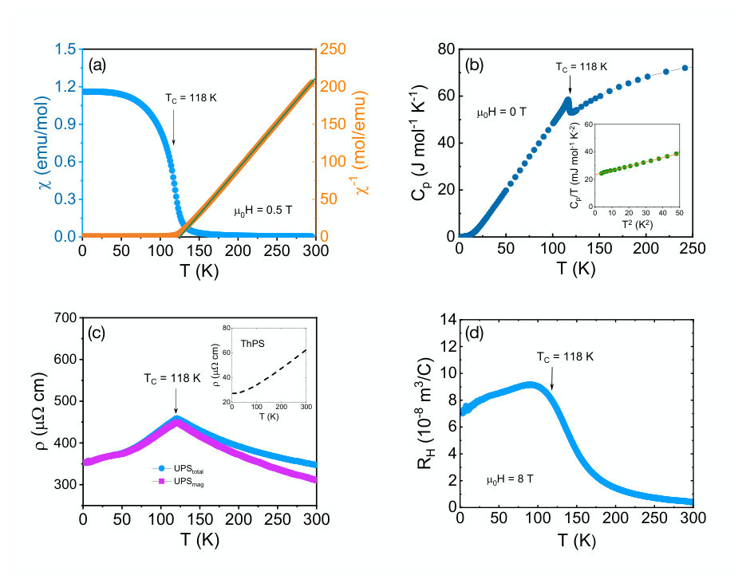
<figcaption class="paper-figure-caption"><b>Fig 1.</b> FIG. 1. Bulk magnetic, thermodynamic, and transport properties of UPS. (a) Magnetic susceptibility χ(T) and inverse susceptibility χ−1(T) measured with µ0H = 0.5 T applied along the crystallographic c axis. The solid line denotes a Curie- Weiss fit in the paramagnetic regime. (b) Temperature dependence of the molar heat capacity Cp(T). The inset shows Cp/T as a function of T 2, together with a fit to Cp/T = γ + βT 2. (c) Longitudinal resistivity of UPS and the nonmagnetic reference compound ThPS (inset). Data for ThPS has been taken from Ref. [34]. The magnetic contribution (purple squares) is estimated as ρUPS mag (T) = ρUPS total(T) −ρThPS ph (T). (d) Effective Hall coefficient, R8T H...</figcaption>
</figure>
<figure class="paper-figure-card">
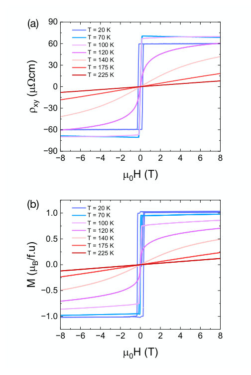
<figcaption class="paper-figure-caption"><b>Fig 2.</b> FIG. 2. Hall resistivity and magnetization isotherms. (a) Hall resistivity ρxy(H) measured at selected temperatures. At temperatures well above TC, the Hall response is approx- imately linear in field. A nonlinear contribution becomes apparent on approaching the transition and develops into a strongly nonlinear, hysteretic response within the ferro- magnetic state. (b) Corresponding magnetization isotherms measured with the magnetic field applied along the crystallo- graphic c axis. The development of hysteresis closely follows the evolution of the Hall response, indicating its magnetic ori- gin.</figcaption>
</figure>
<figure class="paper-figure-card">
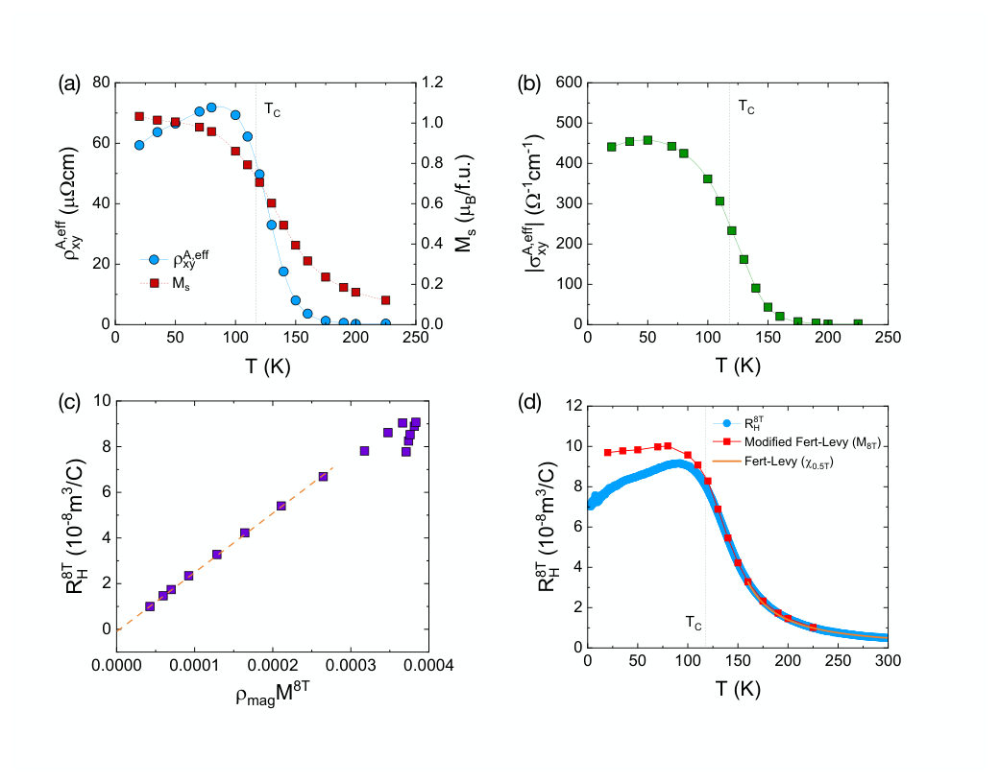
<figcaption class="paper-figure-caption"><b>Fig 3.</b> FIG. 3. Temperature evolution and scaling analysis of the anomalous Hall response in UPS. (a) Effective anomalous Hall resistivity, ρA,eff xy , compared with the saturation magnetization Ms. While both quantities increase below TC, the anomalous Hall resistivity exhibits a broad maximum near 80-90 K and does not simply follow the ordered magnetic moment. (b) Effective anomalous Hall conductivity, |σA,eff xy |, showing the rapid development of a large anomalous Hall response below the Curie temperature. (c) Modified Fert-Levy scaling of the high-temperature Hall coefficient, R8T H , as a function of ρmagM8T. The solid line is a linear fit to the high-temperature data. (d) Comparison of the...</figcaption>
</figure>
<figure class="paper-figure-card">
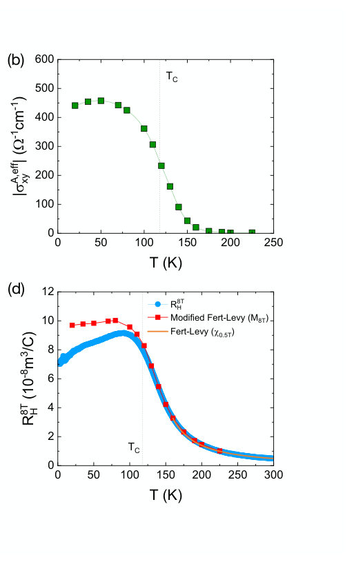
<figcaption class="paper-figure-caption"><b>Fig 4.</b> Figure 2 presents representative Hall resistivity and</figcaption>
</figure>
<figure class="paper-figure-card">
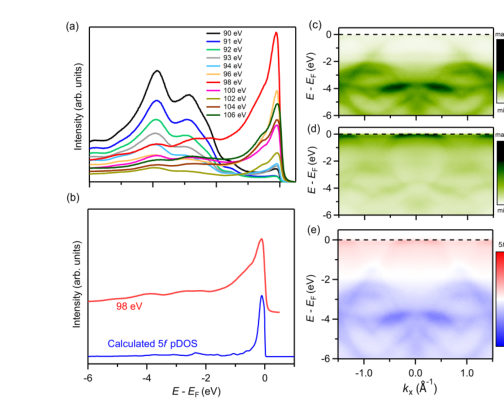
<figcaption class="paper-figure-caption"><b>Fig 5.</b> FIG. 4. Resonant enhancement of the uranium 5f electronic states, demonstrating the dual itinerant-correlated nature of the uranium 5f electrons. (a) Angle-integrated valence-band spectra measured for photon energies between 90 and 106 eV across the U 5d-5f absorption edge. (b) Valence-band spec- trum measured at the resonant photon energy (hν = 98 eV, red) compared with the calculated U-5f partial density of states (blue), multiplied by the Fermi-Dirac distribution. (c,d) Wide-energy momentum-resolved spectra measured un- der off-resonant (92 eV) and resonant (98 eV) conditions along the X −Γ −X direction. (e) Normalized difference between the resonant and off-resonant spectra,...</figcaption>
</figure>
</div>
<p><strong>Summary.</strong> This research investigates anomalous Hall transport in a correlated uranium Weyl semimetal, demonstrating that the transport properties do not simply follow the onset of magnetic order. By combining transport measurements, ARPES, and DFT calculations, the authors show that the anomalous Hall effect is instead governed by a staged, progressive reconstruction of the correlated uranium 5f electronic states.</p>
<p><strong>Why it may be interesting.</strong> This work is highly relevant as it tackles the interplay between strong correlations, topology, and transport—a major theme in modern condensed matter theory, bridging concepts from correlated electron physics and topological materials.</p>
<details>
<summary>Detailed structure</summary>
<p><strong>Main problem.</strong> The central challenge is understanding how strong electronic correlations reshape topological electronic states, specifically determining if anomalous Hall transport emerges simultaneously with magnetic order or reflects a progressive reconstruction of correlated electronic states.</p>
<p><strong>Main result.</strong> The anomalous Hall transport develops over distinct but overlapping temperature ranges relative to magnetic order and correlated electronic reconstruction, indicating a staged electronic evolution in the Weyl semimetal.</p>
<p><strong>Method.</strong> The study combines multiple techniques: magnetotransport measurements (Hall effect), Angle-Resolved Photoemission Spectroscopy (ARPES) to probe spectral weight evolution, and first-principles calculations (DFT) to predict intrinsic topological properties.</p>
<p><strong>Model / system.</strong> The physical system is the uranium ferromagnet UPS, modeled as a correlated uranium Weyl semimetal. The complexity arises from the U 5f electrons, which exhibit itinerant/localized duality due to strong spin-orbit coupling and correlations.</p>
<p><strong>Key observables.</strong> Anomalous Hall conductivity ($\sigma_{xy}$), low-energy U 5f spectral weight evolution, magnetization ($M(T)$), and the intrinsic anomalous Hall conductivity calculated via DFT.</p>
<p><strong>Important parameters / regimes.</strong> The critical temperature for ferromagnetism ($T_C = 118$ K) and a lower temperature scale ($\approx 90$ K) marking the onset of significant spectral weight redistribution are key parameters.</p>
<p><strong>Assumptions / limitations.</strong> The analysis assumes that the anomalous Hall effect is governed by the progressive evolution of the correlated electronic structure rather than solely by the established ordered magnetic moment.</p>
<p><strong>Figures summary.</strong> Figures summarize bulk magnetic, thermodynamic, and transport properties, showing the evolution of $
ho_{A,eff}^{xy}$ relative to $M_s$ and the temperature dependence of ARPES spectral weights, highlighting distinct temperature regimes for different physical phenomena.</p>
<p><strong>Paper structure.</strong> The paper systematically compares transport measurements (Hall effect) with spectroscopic evidence (ARPES) and theoretical predictions (DFT). It establishes that the development of the anomalous Hall response is decoupled from the onset of magnetic order, instead tracking the evolution of the correlated 5f states.</p>
</details>
<details>
<summary>Abstract</summary>
<p>Understanding how electronic correlations reshape topological states remains a central challenge in quantum materials. Here we investigate the uranium ferromagnet UPS using magnetotransport, angle-resolved photoemission spectroscopy, thermodynamic measurements, and first principles calculations. Resonant photoemission reveals narrow U-$5f$ spectral weight at the Fermi level coexisting with broad incoherent states, consistent with the itinerant/localized duality characteristic of uranium $5f$ electrons. The anomalous Hall conductivity reaches approximately $4.5\times10^{2}\,Ω^{-1}\mathrm{cm}^{-1}$, yet does not simply follow the ordered magnetic moment. Temperature dependent photoemission reveals relatively little change across $T_C=118$~K, followed by a pronounced redistribution of low-energy $5f$ spectral weight below approximately 90~K. First-principles calculations identify a symmetry protected Weyl crossing with pronounced Berry curvature and yield an intrinsic anomalous Hall conductivity of approximately $9.6\times10^{2}\,Ω^{-1}\mathrm{cm}^{-1}$. These results demonstrate that magnetic order, correlated electronic reconstruction, and anomalous Hall transport develop over distinct but overlapping temperature ranges, revealing how strong correlations reshape topological transport in a uranium Weyl semimetal.</p>
</details>
<p><sub><a href="#top">↑ back to top</a></sub></p>

<p><a id="paper-2609.23298"></a></p>
<h3 id="static-classical-quantum-entanglement-trade-offs-an-entropic-converse-and-single-letter-characterizations"><a href="http://arxiv.org/abs/2609.23298v1">Static classical-quantum-entanglement trade-offs: an entropic converse and single-letter characterizations</a></h3>
<p><strong>Authors:</strong> Mark M. Wilde<br>
<strong>Type:</strong> theory · <strong>Category:</strong> quantum information and computing · <strong>PDF:</strong> <a href="https://arxiv.org/pdf/2609.23298v1">https://arxiv.org/pdf/2609.23298v1</a><br>
<strong>Analysis basis:</strong> full PDF text, analyzed in chunks</p>
<div class="figure-strip-hint">↔ Scroll figures horizontally</div>
<div class="paper-figures-scroll">
<figure class="paper-figure-card">
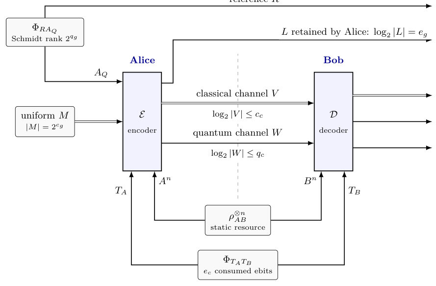
<figcaption class="paper-figure-caption"><b>Fig 1.</b> Figure 1: A code for the direct static task, with resource amounts and net rates as in (2.10). Alice and Bob share ρ⊗n AB and ec supplied ebits in ΦTATB. Alice encodes her shares, a uniform classical message M, and the input AQ entangled with reference R. She transmits V and W and retains L. Bob uses BnTBV W to recover c M, bQ, bL. The error criterion (2.9) tests the classical message and both maximally entangled pairs jointly. An untouched classical copy of M is implicit; local discarded systems are omitted. Double wires are classical and single wires are quantum.</figcaption>
</figure>
<figure class="paper-figure-card">
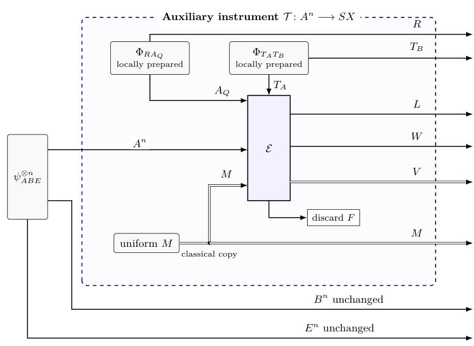
<figcaption class="paper-figure-caption"><b>Fig 2.</b> Figure 2: The instrument used in the converse proof. The dashed box specifies the auxiliary map T : An →SX in (4.1). Both ΦRAQ and ΦTATB are prepared locally in this auxiliary construction. The encoder is the one in Figure 1, with M chosen uniformly. Its quantum output is grouped as S = RLWTB, and its classical output is X = MV . Only the classical register M is copied. The environment F purifies each conditional state and is discarded in the reduced map. The original BnEn systems are untouched. In the physical protocol, TB remains at Bob; placing it in the auxiliary output supplies no additional communication or entanglement to the code.</figcaption>
</figure>
<figure class="paper-figure-card">
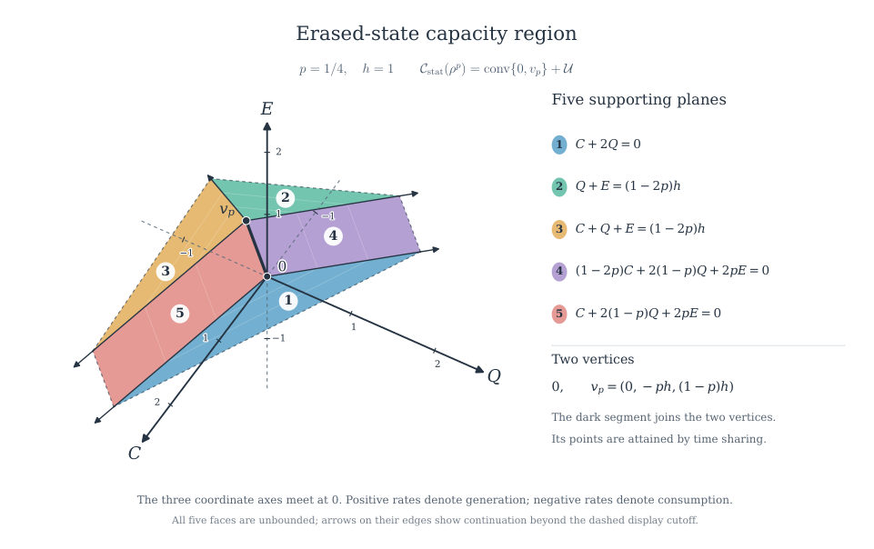
<figcaption class="paper-figure-caption"><b>Fig 3.</b> Figure 3: The erased-state static capacity region in (6.12), for p = 1/4 and h = 1. The five colored faces lie on the supporting planes listed at right, corresponding to the five inequalities in (6.25)– (6.29). The two vertices are 0 and vp := (0, −ph, (1 −p)h), and their connecting edge is attained by time sharing. All five faces are unbounded: arrows on their edges indicate continuation, and dashed segments mark the boundary of the displayed portion. All three coordinate axes pass through the origin. Solid axis arrows indicate positive coordinate directions; lighter dashed extensions indicate negative directions. Tick values are in bits, qubits, and ebits per copy for C, Q, and E,...</figcaption>
</figure>
<figure class="paper-figure-card">
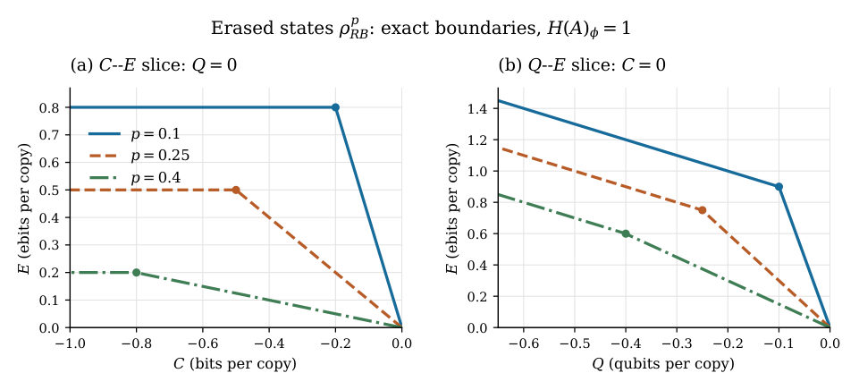
<figcaption class="paper-figure-caption"><b>Fig 4.</b> Figure 4: Exact slices of the erased-state capacity region in Theorem 6.3, for h = H(A)ϕ = 1 and p ∈{0.1, 0.25, 0.4}. The boundaries are given by (6.31) and (6.30). Markers indicate the rate point (0, −ph, (1 −p)h) in (b) and its teleportation conversion in (a). Negative communication rates represent consumption. Only the portions with E ≥0 are displayed; points below each boundary are achievable. The increase beyond one ebit in (b) uses additional supplied quantum communication for entanglement distribution.</figcaption>
</figure>
<figure class="paper-figure-card">
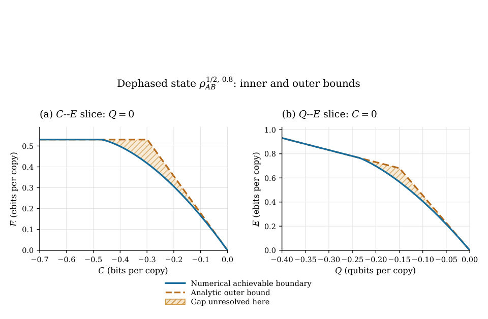
<figcaption class="paper-figure-caption"><b>Fig 5.</b> Figure 5: Static trade-off bounds for the state ρ1/2,0.8 AB defined in (9.5). The solid curves are achievable by the finite construction in Appendix F. The dashed curves are the collective outer bounds in (9.39) and (9.40), with D = 1−h2(0.9). The shaded gap is unresolved. Only the portions with nonnegative entanglement generation and nonpositive communication rates are displayed. Points below a solid curve are achievable; points above a dashed curve are excluded.</figcaption>
</figure>
</div>
<p><strong>Summary.</strong> This paper provides a comprehensive theoretical framework for characterizing the static capacity region of bipartite quantum states, defining the fundamental trade-offs between classical, quantum, and entanglement resources. It establishes a unified entropic converse and derives explicit formulas for these trade-offs, particularly for states undergoing erasure. The results advance the understanding of quantum resource quantification beyond simple asymptotic bounds.</p>
<p><strong>Why it may be interesting.</strong> This work provides fundamental, rigorous bounds on how quantum resources can be converted, which is crucial for understanding the limits of quantum communication protocols and resource theories.</p>
<details>
<summary>Detailed structure</summary>
<p><strong>Main problem.</strong> The paper determines the direct static capacity region of a bipartite quantum state, which quantifies its asymptotic conversion rates into classical communication, quantum communication, and entanglement.</p>
<p><strong>Main result.</strong> It provides a unified entropic converse for this capacity region and derives specific formulas for the achievable trade-off boundaries for various state types, such as those subjected to erasure.</p>
<p><strong>Method.</strong> The analysis employs advanced quantum information theory tools, including deriving a unified entropic converse using strong subadditivity and a supporting-hyperplane characterization.</p>
<p><strong>Model / system.</strong> The study focuses on bipartite quantum states ($
ho_{AB}$) and the resource trade-offs between classical bits, qubits, and ebits, considering protocols involving local instruments and memory states.</p>
<p><strong>Key observables.</strong> Net rates $(C, Q, E)$ (classical bits, qubits, ebits); entanglement entropy ($h$); erasure probability ($p$).</p>
<p><strong>Important parameters / regimes.</strong> Blocklength ($n$); erasure probability ($p$); entanglement entropy ($h$); resource consumption/generation rates.</p>
<p><strong>Assumptions / limitations.</strong> The analysis assumes finite-dimensional quantum systems and relies on deriving bounds based on local instruments and resource conservation laws.</p>
<p><strong>Figures summary.</strong> Figures illustrate the full erased-state region and capacity slices, showing the convex hull of achievable rates derived from explicit constructions.</p>
<p><strong>Paper structure.</strong> The paper builds from establishing the general unified entropic converse for the static capacity region, deriving the supporting-hyperplane formula, and then applying these results to specific state families (e.g., erased states, dephased states) to find exact characterizations.</p>
</details>
<details>
<summary>Abstract</summary>
<p>The direct static capacity region of a bipartite quantum state describes its asymptotic conversion into classical communication, quantum communication, and entanglement, with all communication directed from Alice to Bob. This paper gives a unified entropic converse for this region. The proof treats generated and consumed resources simultaneously and derives all three information inequalities for one local instrument. Its main ingredients are no-signalling, the chain rule, strong subadditivity, and continuity of conditional entropy. A supporting-hyperplane characterization leads to the static capacity formula, which is helpful in determining single-letterization of the capacity region. For a pure state of entanglement entropy $h$ subjected to erasure with probability $p$, the complete region is the convex hull of $0$ and $(0,-ph,(1-p)h)$, plus the unit-resource cone. This statement holds for arbitrary collective instruments by using subset-entropy inequalities related to earlier methods used for the dynamic capacity region of the erasure channel. Complete characterizations also hold for symmetrically extendible states and locally flagged pure-state mixtures. For maximally correlated states, the optimization over local instruments admits an exact matrix formulation and an additive outer bound. An explicit qubit example shows that a nonorthogonal discarded quantum memory can outperform every efficient instrument and every instrument with conditionally commuting discarded states. For states obtained by qubit dephasing of Schmidt-aligned pure states, an exact threshold characterizes when the static capacity formula vanishes, at every blocklength and after regularization. Full single-letter characterizations for general Hadamard states and for the remaining trade-offs for dephased states remain open, with sufficient additivity conditions identified.</p>
</details>
<p><sub><a href="#top">↑ back to top</a></sub></p>

<p><a id="paper-2609.22589"></a></p>
<h3 id="structural-and-magnetic-properties-of-tbcuasmath1688math-studied-by-x-ray-and-neutron-scattering"><a href="http://arxiv.org/abs/2609.22589v1">Structural and magnetic properties of TbCuAs$_2$ studied by X-ray and neutron scattering</a></h3>
<p><strong>Authors:</strong> M. G. Kim, T. Heitmann, S. Boney, C. Neupane, R. Acevedo-Esteves, A. Sapkota, D. Evans, P. C. Canfield, C. Nelson, E. D. Mun, J. -W. Kim<br>
<strong>Type:</strong> experiment · <strong>Category:</strong> strongly correlated electrons · <strong>PDF:</strong> <a href="https://arxiv.org/pdf/2609.22589v1">https://arxiv.org/pdf/2609.22589v1</a><br>
<strong>Analysis basis:</strong> full PDF text, analyzed in chunks</p>
<div class="figure-strip-hint">↔ Scroll figures horizontally</div>
<div class="paper-figures-scroll">
<figure class="paper-figure-card">
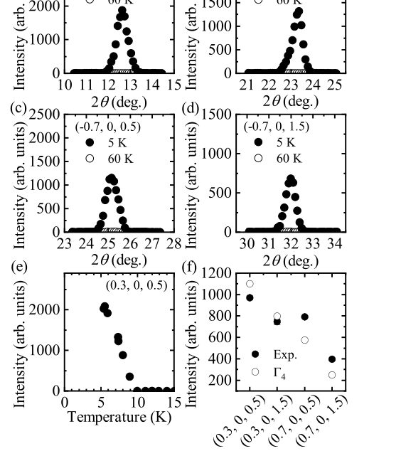
<figcaption class="paper-figure-caption"><b>Fig 1.</b> FIG. 2. Neutron diffraction results. θ−2θ scans measured at selected Q’s: (a) Q = (-0.3, 0, 0.5), (b) (-0.3, 0, 1.5), (c) (-0.7, 0, 0.5), and (d) (-0.7, 0, 1.5). (e) Magnetic order parameter measured at Q = (0.3, 0, 0.5). (f) Comparison between the measured intensity and the calculated intensity at various Q for the Γ4 magnetic representation.</figcaption>
</figure>
<figure class="paper-figure-card">
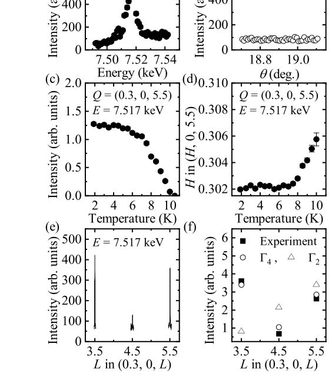
<figcaption class="paper-figure-caption"><b>Fig 2.</b> FIG. 1. Resonant magnetic scattering from the TbCuAs2 single crys- tal. Energy scan through (a) Q = (0.3, 0, 5.5) and (b) (0, 0.3, 5.5) magnetic peak positions at T = 1.8 K. (c) AFM order parameter measured at Q = (0.3, 0, 5.5) at the Tb L3 edge (E = 7.517 keV). (d) Change in the magnetic peak position measured at Q = (0.3, 0, 5.5). (e) Peak intensity at different L in (0.3, 0, L). (f) Comparison be- tween the measured intensity and the calculated intensity at Q = (0.3, 0, L) for the Γ4 and Γ2 magnetic representations.</figcaption>
</figure>
</div>
<p><strong>Summary.</strong> This experimental study characterizes the structural and magnetic ground state of the antiferromagnetic metal TbCuAs2 using neutron and X-ray scattering. The authors determined the magnetic structure to be incommensurate and aligned along the b-axis, confirming a strong coupling between the magnetic ordering and the crystal lattice distortion. The findings suggest a common physical mechanism governs the behavior of rare-earth copper arsenides exhibiting low-temperature resistivity anomalies.</p>
<p><strong>Why it may be interesting.</strong> The detailed structural and magnetic characterization of this strongly correlated material provides empirical evidence for coupled spin-lattice instabilities, which is relevant to understanding unconventional superconductivity mechanisms in related iron-based superconductors.</p>
<details>
<summary>Detailed structure</summary>
<p><strong>Main problem.</strong> The study investigates the anomalous resistivity upturn observed at low temperatures in the antiferromagnetic metal TbCuAs2, and aims to determine the precise nature of its antiferromagnetic ordering and its interplay with the crystal structure.</p>
<p><strong>Main result.</strong> The magnetic structure is unambiguously determined as $\Gamma_4$ with moments along the $b$ axis and a $(++--)$ stacking sequence along $c$, revealing a coupling between incommensurate magnetism and structural distortion.</p>
<p><strong>Method.</strong> The research employed a combination of single crystal neutron diffraction, X-ray resonant magnetic scattering (XRMS), and single crystal X-ray diffraction measurements.</p>
<p><strong>Model / system.</strong> The physical system is the rare-earth copper arsenide family, specifically TbCuAs2, which is an antiferromagnetic metal exhibiting low-temperature resistivity anomalies.</p>
<p><strong>Key observables.</strong> Resistivity ($\rho$) vs. Temperature ($T$), magnetic scattering intensities (from XRMS and neutron diffraction), and lattice parameters ($c, a, b$) dependence on temperature.</p>
<p><strong>Important parameters / regimes.</strong> Antiferromagnetic ordering temperature ($T_N \approx 10 \text{ K}$), incommensurate propagation vector $\mathbf{q} = (\tau, 0, 0.5)$ with $\tau \approx 0.3$.</p>
<p><strong>Assumptions / limitations.</strong> The analysis compares results to sister compounds in the $R\text{CuAs}_2$ family, suggesting a common underlying physics governs the structural and magnetic properties.</p>
<p><strong>Figures summary.</strong> Figures summarize XRMS results confirming AFM ordering, magnetic peak positions, and the temperature dependence of lattice parameters ($c, a, b$).</p>
<p><strong>Paper structure.</strong> The paper proceeds by first establishing the anomalous resistivity upturn, then using XRMS and neutron diffraction to determine the magnetic ordering vector and moment direction, followed by analyzing the temperature dependence of both magnetic and structural parameters, and finally comparing these findings to related compounds.</p>
</details>
<details>
<summary>Abstract</summary>
<p>We investigated antiferromagnetic metal TbCuAs$_2$, which exhibits an anomalous resistivity upturn at low temperatures. This resistivity upturn has been proposed to originate from the material's magnetic ground state; however, the precise nature of the antiferromagnetic ordering in this compound has not been previously established. Here, we present a combined single crystal neutron diffraction, X-ray resonant magnetic scattering, and single crystal X-ray diffraction study of TbCuAs$_2$. These measurements unambiguously determine the Tb magnetic moment direction, the antiferromagnetic arrangement along high symmetry directions, the interplay between structure and magnetism, and their temperature dependence. Our observations are compared with previous studies on sister compounds in the rare-earth copper arsenide family ($R$CuAs$_2$, $R$ = Sm and Gd), which also displays resistivity anomalies. We suggest a common underlying physics governing the structural and magentic properties of rare-earth copper arsenides that exhibit low-temperature resistivity anomalies.</p>
</details>
<p><sub><a href="#top">↑ back to top</a></sub></p>

<p><a id="paper-2609.24475"></a></p>
<h3 id="subspace-controllability-in-variational-quantum-circuits-maximising-expressivity-and-increasing-search-efficiency-with-dynamical-lie-algebras"><a href="http://arxiv.org/abs/2609.24475v1">Subspace Controllability in Variational Quantum Circuits: Maximising Expressivity and Increasing Search Efficiency with Dynamical Lie Algebras</a></h3>
<p><strong>Authors:</strong> Andrew Rowan Barlow, Hans-Martin Rieser, Markus Lange<br>
<strong>Type:</strong> both · <strong>Category:</strong> quantum information and computing · <strong>PDF:</strong> <a href="https://arxiv.org/pdf/2609.24475v1">https://arxiv.org/pdf/2609.24475v1</a><br>
<strong>Analysis basis:</strong> full PDF text, analyzed in chunks</p>
<div class="figure-strip-hint">↔ Scroll figures horizontally</div>
<div class="paper-figures-scroll">
<figure class="paper-figure-card">
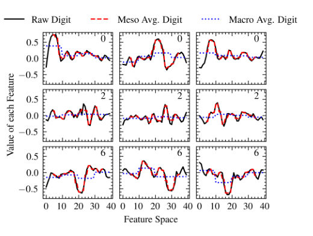
<figcaption class="paper-figure-caption"><b>Fig 1.</b> Fig. 1. A visualisation of nine MNIST-1D digits, and their preprocessed versions ‘Meso Avg. Digit’ and ‘Macro Avg. Digit’, used in the multi- classification task. The number in the top right of each subplot denotes the label of the sample. The ‘Raw Digit’ denotes the original digit, while the meso and macro digits are averaged over every two and ten consecutive features respectively.</figcaption>
</figure>
<figure class="paper-figure-card">
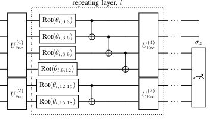
<figcaption class="paper-figure-caption"><b>Fig 2.</b> Fig. 2. The circuit architecture chosen for experiments that becomes con- trollable when l ≥15, where l denotes the number of repeating layers. The trainable parameters of the circuit are θl,0≤j&lt;18. The encoding map, U(n) Enc (v), embeds a classical data sample v ∈Rm with m features into a n-qubit state.</figcaption>
</figure>
<figure class="paper-figure-card">
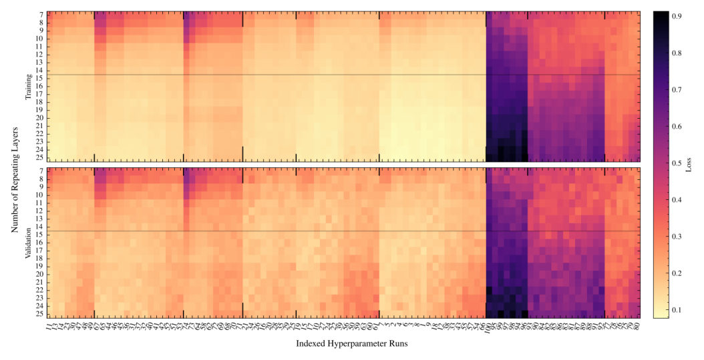
<figcaption class="paper-figure-caption"><b>Fig 3.</b> Fig. 3. An overview of the performance of controllable circuits over all hyperparameter trials conducted in the experiment. Each cell’s value is the aggregated final loss of the 10 models that were trained for each hyperparameter sample. The aggregation method used was the inter-quartile mean. Each column represents a fixed hyperparameter configuration and is sorted ascending from left to right based on the learning rate of the Adam optimiser, then batch size, and finally scaling parameter. The large and medium ticks represent a change in learning rate and scaling parameter respectively. The index of the hyperparameter sample along the x-axis is the rank in minimising the sum of the...</figcaption>
</figure>
<figure class="paper-figure-card">
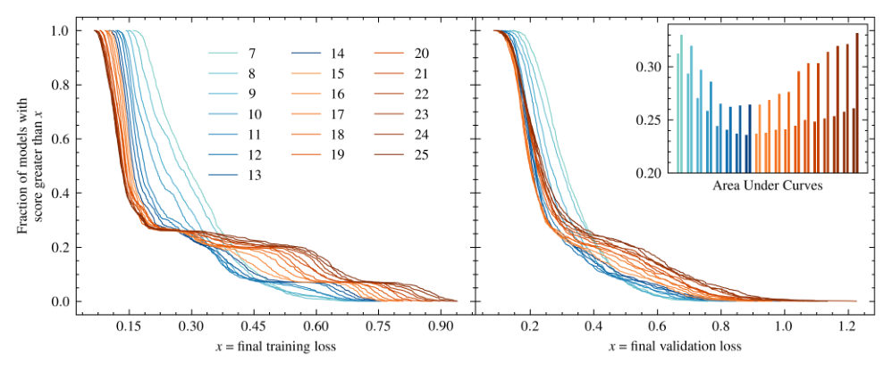
<figcaption class="paper-figure-caption"><b>Fig 4.</b> Fig. 4. Each line is a cumulative plot of the final losses obtained by 1,000 models from the entire hyperparameter search with a fixed number of repeating layers in the quantum circuit. A point on the line at x marks the fraction of runs that obtained a minimum loss of x. The blue gradient denotes circuits that are uncontrollable, and the red controllable. The top right plot on the right hand side denotes the area under the runs of the left and right plot, each line is grouped into pairs of bars where the left bars are the areas of the training losses, and the right the validation losses. The inflexion in the ‘Area Under Curves’ confirms that the models best at minimising their validation...</figcaption>
</figure>
<figure class="paper-figure-card">
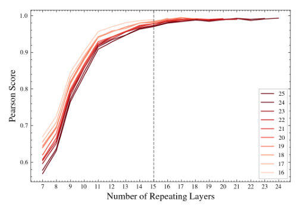
<figcaption class="paper-figure-caption"><b>Fig 5.</b> Fig. 5. Each line, labelled r, corresponds to a hyperparameter search of 100 trials with circuits of r number of repeated layers. The value for integer x along the x-axis is the Pearson correlation coefficient computed across the aggregated final validation losses obtained by the 100 models with r repeating layers, against the same hyperparameter search of circuits containing x number of repeated layers. For every Pearson score the p-tests were &lt; 0.001. Circuits with 15 or more repeating layers are controllable, and so the validation loss values obtained by such circuits have a strong linear correlation with the losses achieved by circuits that are near the onset of controllability.</figcaption>
</figure>
</div>
<p><strong>Summary.</strong> This work analyzes the controllability of Variational Quantum Circuits (VQC) by employing dynamical Lie algebras. By testing this on a classical machine learning task, the authors show that restricting the search for optimal circuit parameters to the subspace of controllable circuits improves performance and reduces computational overhead. This suggests a powerful diagnostic tool for designing efficient quantum machine learning models.</p>
<p><strong>Why it may be interesting.</strong> It provides a concrete, computationally grounded method (DLA analysis) to diagnose and constrain the search space of complex quantum models, which is highly relevant for designing efficient quantum algorithms for near-term hardware.</p>
<details>
<summary>Detailed structure</summary>
<p><strong>Main problem.</strong> The paper investigates whether the benefits of subspace controllability, observed in quantum-based machine learning, extend to classical tasks and how this can optimize the training process.</p>
<p><strong>Main result.</strong> For the tested classical task (MNIST-1D), the best performing quantum models were found to be subspace controllable, suggesting that restricting the hyperparameter search to controllable circuits can reduce computational cost.</p>
<p><strong>Method.</strong> The authors analyzed the controllability of variational quantum circuits using the framework of dynamical Lie algebras and tested the hypothesis on a multi-classification task.</p>
<p><strong>Model / system.</strong> The model uses variational hybrid quantum circuits parameterized by angles, operating within the $SU(2^n)$ unitary group. The analysis relies on constructing and analyzing the Dynamical Lie Algebra (DLA) associated with the circuit generators.</p>
<p><strong>Key observables.</strong> Training and validation losses, and the dimension of the Dynamical Lie Algebra (DLA).</p>
<p><strong>Important parameters / regimes.</strong> Circuit depth (number of layers), and the degree of controllability (i.e., matching the DLA dimension to the target space dimension).</p>
<p><strong>Assumptions / limitations.</strong> The analysis assumes that restricting the search space to controllable circuits is beneficial for optimization, though this is limited to the MNIST-1D task.</p>
<p><strong>Figures summary.</strong> Figures demonstrate that controllable circuits minimize loss over hyperparameter sweeps, and that the best-performing models are found near the onset of controllability, showing a strong correlation between loss and circuit depth in this regime.</p>
<p><strong>Paper structure.</strong> The paper first establishes the mathematical tools (DLA, Lie algebras) to diagnose controllability in VQCs. It then applies this diagnostic to a classical ML task (MNIST-1D) to show that controllable circuits perform better and that restricting the search to the onset of controllability is an effective optimization strategy.</p>
</details>
<details>
<summary>Abstract</summary>
<p>Variational hybrid quantum models are a common paradigm for realising machine learning on quantum hardware. Nonetheless, they are challenging to train due to several problems intrinsic to the loss landscapes formed by variational quantum circuits. To mitigate these issues, researchers have extended the idea of subspace controllability leading to an increase in the success rate of variational models in finding the global minimum for quantum-based tasks. However, it remains unknown whether these results extend to classical-based tasks, and if any advantages are realised over a hyperparameter search. We begin to address this question by employing controllable circuits in a multi- classification task using MNIST-1D. Our results show that over a hyperparameter search, the majority of quantum models that achieve the lowest training and validation losses are subspace controllable. These results indicate that the hyperparameter search can be restricted to such models, in turn reducing computational cost and time.</p>
</details>
<p><sub><a href="#top">↑ back to top</a></sub></p>

<p><a id="paper-2609.23794"></a></p>
<h3 id="sum-of-three-squares-and-particle-in-a-cubic-box-degeneracies"><a href="http://arxiv.org/abs/2609.23794v1">Sum of Three Squares and Particle in a Cubic Box - Degeneracies</a></h3>
<p><strong>Authors:</strong> S. Pratik Khastgir<br>
<strong>Type:</strong> theory · <strong>Category:</strong> other · <strong>PDF:</strong> <a href="https://arxiv.org/pdf/2609.23794v1">https://arxiv.org/pdf/2609.23794v1</a><br>
<strong>Analysis basis:</strong> full PDF text, analyzed in chunks</p>
<div class="figure-strip-hint">↔ Scroll figures horizontally</div>
<div class="paper-figures-scroll">
<figure class="paper-figure-card">
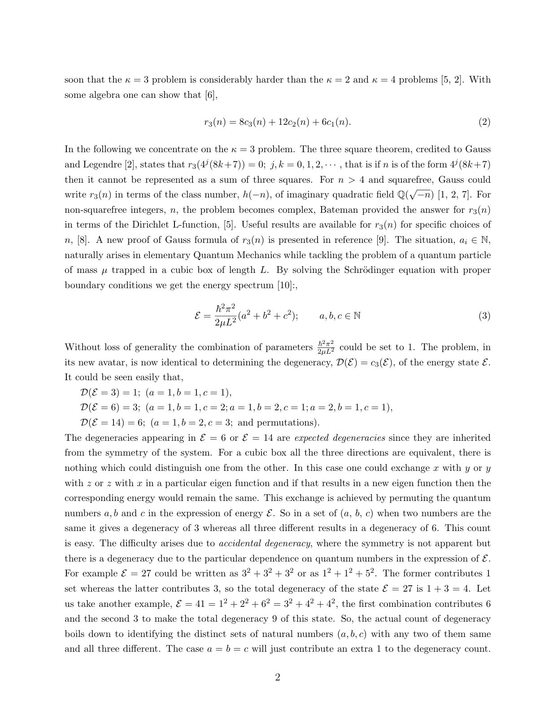
<figcaption class="paper-figure-caption"><b>Fig 1.</b> Low-resolution page preview, page 2</figcaption>
</figure>
<figure class="paper-figure-card">
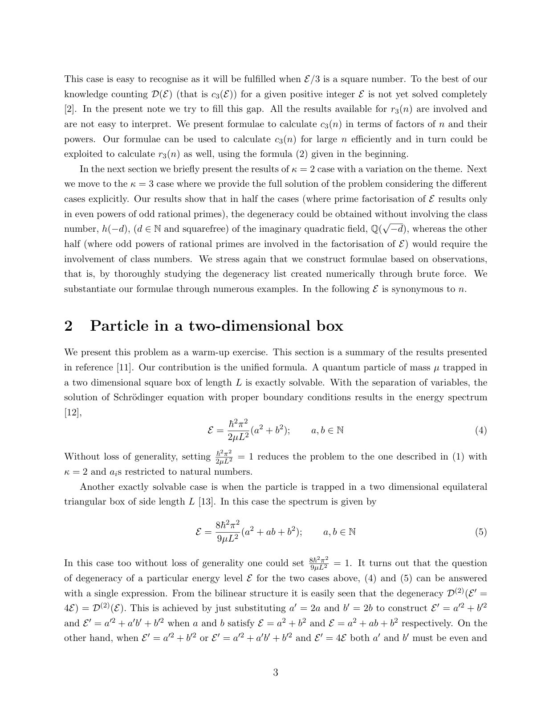
<figcaption class="paper-figure-caption"><b>Fig 2.</b> Low-resolution page preview, page 3</figcaption>
</figure>
<figure class="paper-figure-card">
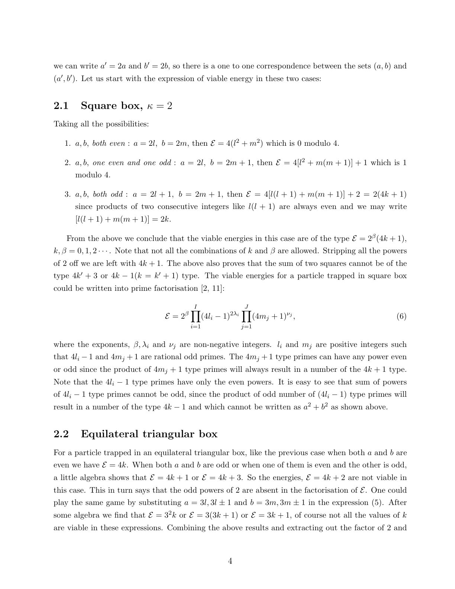
<figcaption class="paper-figure-caption"><b>Fig 3.</b> Low-resolution page preview, page 4</figcaption>
</figure>
<figure class="paper-figure-card">
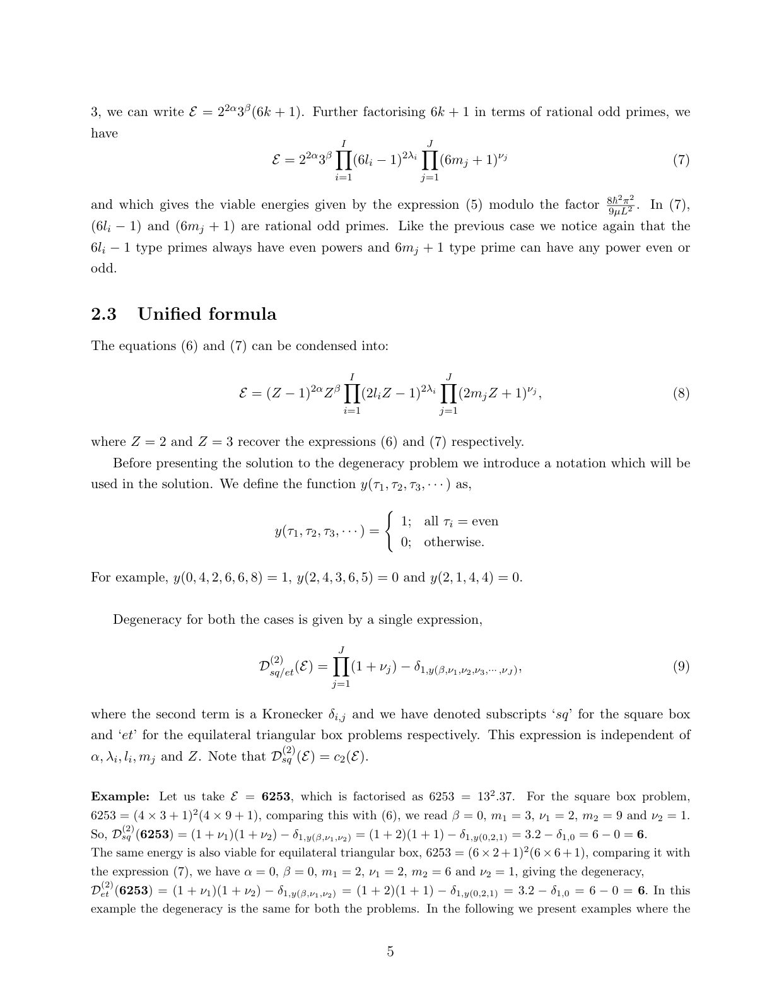
<figcaption class="paper-figure-caption"><b>Fig 4.</b> Low-resolution page preview, page 5</figcaption>
</figure>
<figure class="paper-figure-card">
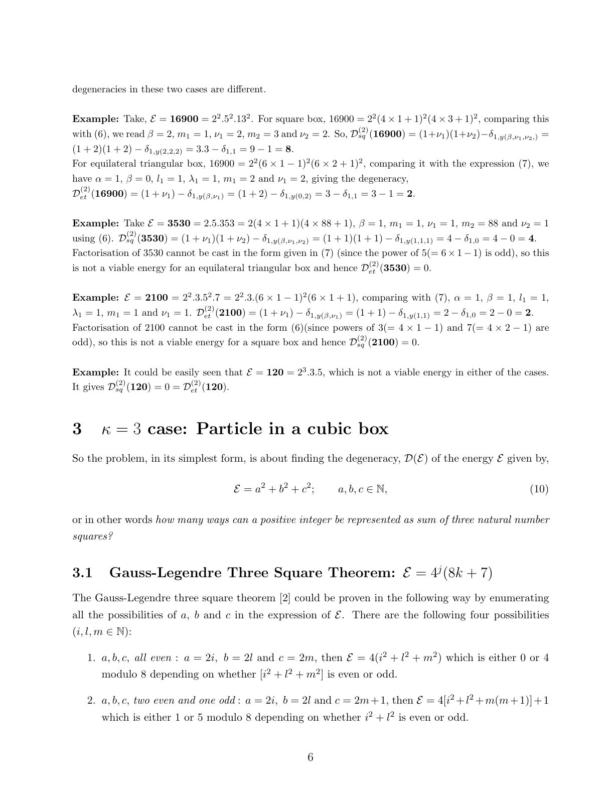
<figcaption class="paper-figure-caption"><b>Fig 5.</b> Low-resolution page preview, page 6</figcaption>
</figure>
</div>
<p><strong>Summary.</strong> This paper tackles the degeneracy of energy levels for a particle in a cubic box by reformulating it as a number theory problem: counting the ways an integer can be written as the sum of three squares. The authors present highly detailed, formulaic results derived from extensive numerical computation, linking quantum physics to advanced concepts in quadratic forms and class numbers.</p>
<p><strong>Why it may be interesting.</strong> While the physical context is simple (particle in a box), the core mathematical challenge involves deep, unsolved problems in number theory (like representing integers as sums of squares), making it an intersection of physics and pure mathematics.</p>
<details>
<summary>Detailed structure</summary>
<p><strong>Main problem.</strong> The paper determines the degeneracy of energy eigenvalues for a quantum particle in a cubic box, which mathematically translates to finding the number of ways a positive integer can be written as the sum of three natural number squares.</p>
<p><strong>Main result.</strong> The authors derive complex, case-dependent formulae for the degeneracy $D(E)$ based on the prime factorization structure of the energy $E$, though they explicitly state these are conjectures lacking formal proofs.</p>
<p><strong>Method.</strong> The methodology combines number theory (analyzing sums of squares, class numbers) with quantum mechanics (the particle in a box model). Calculations are heavily based on studying large numerical lists of degeneracies generated by computational tools.</p>
<p><strong>Model / system.</strong> The primary model is a quantum particle confined to a cubic box, leading to an energy spectrum proportional to $a^2 + b^2 + c^2$. The problem is mathematically equivalent to counting the number of ways $E$ can be written as $a^2 + b^2 + c^2$ where $a, b, c$ are natural numbers.</p>
<p><strong>Key observables.</strong> The degeneracy $D(E)$, which is the number of ways $E$ can be written as the sum of three squares, and the energy $E$ itself.</p>
<p><strong>Important parameters / regimes.</strong> The energy $E$, the box dimensions (implicitly set by the quantization constant), and number theoretic parameters like class numbers $h(-d)$ and prime factorizations.</p>
<p><strong>Assumptions / limitations.</strong> The authors explicitly state that they do not provide proofs for their derived formulae, which are built up by analyzing numerical patterns in the degeneracy list.</p>
<p><strong>Figures summary.</strong> Not specified, but the notes indicate the use of numerical data lists (e.g., Appendix B listing $\{E, D(E)\}$ up to $E=500$).</p>
<p><strong>Paper structure.</strong> The paper systematically analyzes the problem by first relating the quantum mechanical degeneracy to the number theory problem of sums of three squares. It then develops specialized formulae by analyzing different factorization structures of the energy $E$ (e.g., based on powers of rational odd primes), culminating in complex, case-by-case formulas.</p>
</details>
<details>
<summary>Abstract</summary>
<p>We address the problem of determining the degeneracy of a particular energy eigenvalue corresponding to a quantum particle trapped in a cubic box. In other words, we aim to find the number of ways a specific positive integer can be written as the sum of three natural number squares. This is a classic problem in number theory. We provide a closed-form, exact solution to the problem. We do not claim to provide proofs, as we have none; instead, we build up the formulae starting from simple cases where the answer could be deduced by studying the list of degeneracies. We present ample examples that could be verified against the degeneracy calculated numerically via the brute-force method. We arrived at the solution by meticulously studying the list of degeneracies for the first five million numbers, generated by Mathematica$^{\circledR}$.</p>
</details>
<p><sub><a href="#top">↑ back to top</a></sub></p>

<p><a id="paper-2609.23047"></a></p>
<h3 id="where-to-decide-control-plane-geometry-in-coherence-limited-quantum-networks"><a href="http://arxiv.org/abs/2609.23047v1">Where to Decide: Control-Plane Geometry in Coherence-Limited Quantum Networks</a></h3>
<p><strong>Authors:</strong> I. Dey, N. Marchetti<br>
<strong>Type:</strong> theory · <strong>Category:</strong> quantum information and computing · <strong>PDF:</strong> <a href="https://arxiv.org/pdf/2609.23047v1">https://arxiv.org/pdf/2609.23047v1</a><br>
<strong>Analysis basis:</strong> full PDF text, analyzed in chunks</p>
<div class="figure-strip-hint">↔ Scroll figures horizontally</div>
<div class="paper-figures-scroll">
<figure class="paper-figure-card">
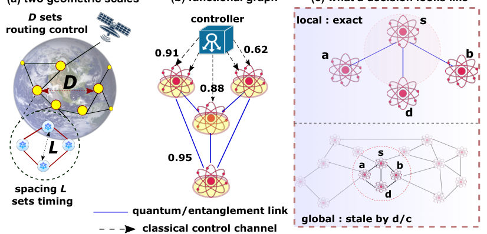
<figcaption class="paper-figure-caption"><b>Fig 1.</b> Fig. 1. (a) The two geometric scales. Timing coordination between adjacent repeaters is set by the spacing L; routing control is set by the diameter D, because every request pays a round trip to the controller however short its own path. (b) The functional graph: each edge weight is the predicted contribution of that link to end-to-end fidelity, combining how good a pair is when created, how long it must be waited for, and how fast it decays. Thicker edges carry higher weight, and the best path is the one whose weights multiply to the largest value. (c) The information behind one decision: a node sees its own incident links exactly, a controller sees all links but each as it was one...</figcaption>
</figure>
<figure class="paper-figure-card">
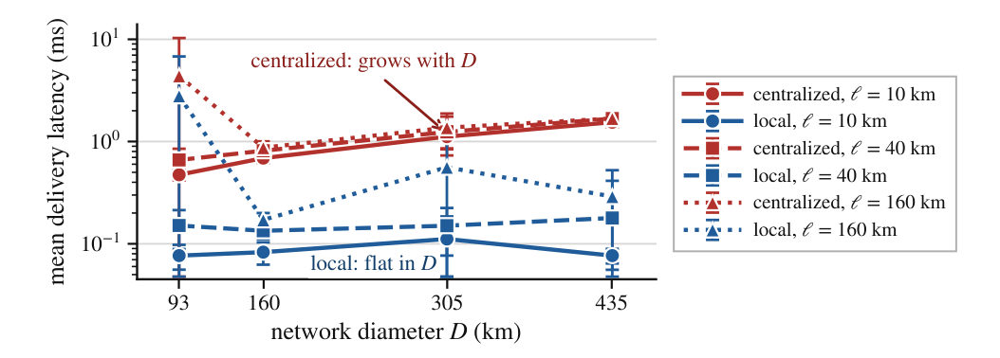
<figcaption class="paper-figure-caption"><b>Fig 2.</b> Fig. 2. Mean delivery latency against network diameter at constant node density, for three traffic-locality scales ℓ. Centralized latency grows with diameter; local latency is nearly scale invariant. Six replicates per point, ninety-five per cent confidence intervals, 1 ms coherence.</figcaption>
</figure>
<figure class="paper-figure-card">

<figcaption class="paper-figure-caption"><b>Fig 3.</b> Figure 5 plots the fraction of aligned repeater slots against the product of slot rate and link delay, for spacings from 5 to 53 km. Despite the tenfold range in distance, all five curves collapse onto one relationship: alignment is almost perfect below about 0.035, holds between 0.90 and 0.93 near 0.05, and falls to chance beyond about 0.15. Chance is the alignment independently and uniformly distributed phases would produce, approximately 0.3 for the slot-overlap toler-</figcaption>
</figure>
<figure class="paper-figure-card">

<figcaption class="paper-figure-caption"><b>Fig 4.</b> Fig. 3. Goodput against memory coherence time in networks of 12, 24 and 48 nodes at fixed node density, so service area and diameter grow with node count. Goodput counts only pairs delivered above the threshold Fth of Section III. The global view wins under short coherence (shaded band), and the crossover stays in the same range at all sizes.</figcaption>
</figure>
<figure class="paper-figure-card">

<figcaption class="paper-figure-caption"><b>Fig 5.</b> Fig. 4. Fraction of delivery latency spent waiting on control rather than physical generation, against traffic-locality scale ℓ, for four centralized diameters and for local allocation averaged over all diameters. Conditional on the fast-heralding regime; six replicates per point at 1 ms coherence.</figcaption>
</figure>
</div>
<p><strong>Summary.</strong> This paper analyzes the critical control plane geometry in quantum networks, identifying that control latency itself degrades entanglement fidelity. By comparing centralized versus local decision-making, the authors show that local, fresh information sources outperform global, delayed views, especially as the rate of entanglement generation increases.</p>
<p><strong>Why it may be interesting.</strong> It provides a rigorous, quantitative framework for understanding the non-trivial engineering constraints of quantum networks, moving beyond simple resource availability to incorporate the time-dependent fidelity decay of control information itself.</p>
<details>
<summary>Detailed structure</summary>
<p><strong>Main problem.</strong> The paper establishes a third, geometric limit in quantum networks: entanglement decoheres while control information travels, making the distance to the resource allocator a direct fidelity cost.</p>
<p><strong>Main result.</strong> Local decision-making proves robust and scale-invariant for short-range traffic, while centralized control suffers latency that grows with network diameter, especially as heralding accelerates.</p>
<p><strong>Method.</strong> The authors developed a functional-graph abstraction to weight links by their multiplicative contribution to end-to-end fidelity, comparing centralized versus local resource allocation using a replicated discrete-event model.</p>
<p><strong>Model / system.</strong> The system modeled is a quantum repeater network distributing entanglement. The core abstraction involves weighting links based on the combination of fresh pair quality and an exponential penalty related to expected wait times and coherence time.</p>
<p><strong>Key observables.</strong> Goodput (useful deliveries), delivery latency (split into control and physical components), and the fidelity cost associated with control delay.</p>
<p><strong>Important parameters / regimes.</strong> Network diameter (D), locality scale ($\ell$), memory coherence time ($T_c$), repeater spacing ($L$), and slot rate ($f_0$).</p>
<p><strong>Assumptions / limitations.</strong> The analysis assumes a 'future fast-heralding regime' where physical generation is not the bottleneck, and that the choice is between 'narrow, fresh' vs. 'broad, stale' information.</p>
<p><strong>Figures summary.</strong> Figures illustrate the two geometric scales (timing vs. routing control), compare goodput vs. coherence time for different network sizes, and show how delivery latency splits between control waiting time and physical generation time.</p>
<p><strong>Paper structure.</strong> The paper develops by first identifying the geometric control plane limit, then developing a functional-graph abstraction, and finally comparing centralized vs. local decision-making using a detailed discrete-event simulation to quantify the resulting latency and goodput trade-offs.</p>
</details>
<details>
<summary>Abstract</summary>
<p>Quantum networks are usually framed by two hardware limits: how fast entanglement can be heralded, and how long a memory can hold it. We establish a third, geometric limit: entanglement decoheres while control information travels, so the distance to whoever allocates resources enters the fidelity budget directly. We develop a functional-graph abstraction weighting each link by its predicted multiplicative contribution to end-to-end fidelity, separating global but delayed state from local and immediate state, and compare centralized against local allocation in a replicated discrete-event model. Centralized delivery latency grows with network diameter while local latency is nearly scale invariant, differing up to twenty-fold for short-range traffic; the coherence threshold at which a global view outweighs a fresh one does not shift across the tested sizes; and as heralding accelerates, the dominant cost moves into the control plane. Slot synchronization instead obeys the product of slot rate and one-way link delay, so it is bounded by repeater spacing rather than diameter. Controller placement, decision locality, repeater spacing and slot rate are physical design parameters, not implementation details.</p>
</details>
<p><sub><a href="#top">↑ back to top</a></sub></p>

<p><a id="paper-2609.23455"></a></p>
<h3 id="zero-knowledge-proofs-of-quantumness"><a href="http://arxiv.org/abs/2609.23455v1">Zero-Knowledge Proofs of Quantumness</a></h3>
<p><strong>Authors:</strong> Duong Hieu Phan, Weiqiang Wen, Xingyu Yan, Jinwei Zheng<br>
<strong>Type:</strong> theory · <strong>Category:</strong> quantum information and computing · <strong>PDF:</strong> <a href="https://arxiv.org/pdf/2609.23455v1">https://arxiv.org/pdf/2609.23455v1</a><br>
<strong>Analysis basis:</strong> full PDF text, analyzed in chunks</p>
<div class="figure-strip-hint">↔ Scroll figures horizontally</div>
<div class="paper-figures-scroll">
<figure class="paper-figure-card">

<figcaption class="paper-figure-caption"><b>Fig 1.</b> Figure 1: Schematic diagram of a malicious verifier V∗spoofing to utilize the quantum capabilities of the quantum prover P in factoring-based quantumness proof scheme.</figcaption>
</figure>
<figure class="paper-figure-card">

<figcaption class="paper-figure-caption"><b>Fig 2.</b> Figure 2: Illustration of our new zero-knowledge property for proofs of quantumness.</figcaption>
</figure>
<figure class="paper-figure-card">

<figcaption class="paper-figure-caption"><b>Fig 3.</b> Figure 3: Diagram of ZKPoQ for factoring-based scheme.</figcaption>
</figure>
<figure class="paper-figure-card">

<figcaption class="paper-figure-caption"><b>Fig 4.</b> Figure 4: Diagram of ZKPoQ for the LWE-based scheme [BCM+18].</figcaption>
</figure>
</div>
<p><strong>Summary.</strong> This paper introduces Zero-Knowledge Proofs of Quantumness (ZKPoQ) to secure existing proofs that a quantum device is genuinely quantum. By requiring the verifier to provide an extractable zero-knowledge proof, the scheme prevents malicious verifiers from exploiting the quantum advantage. This provides a significantly enhanced security notion for verifying quantum computational claims.</p>
<p><strong>Why it may be interesting.</strong> While focused on cryptography, the formalization of quantum advantage proofs and the need for enhanced security notions like ZKPoQ are fundamental theoretical tools relevant to quantum information security.</p>
<details>
<summary>Detailed structure</summary>
<p><strong>Main problem.</strong> The paper addresses the security vulnerability of existing Proofs of Quantumness (PoQ) schemes, where malicious classical verifiers could exploit quantum advantages.</p>
<p><strong>Main result.</strong> The authors successfully formalize and construct Zero-Knowledge Proofs of Quantumness (ZKPoQ) for established schemes like factoring-based and LWE-based PoQ.</p>
<p><strong>Method.</strong> The core method involves augmenting existing PoQ schemes by requiring the verifier to provide an extractable non-interactive zero-knowledge (NIZK) proof, thereby regulating the verifier's behavior.</p>
<p><strong>Model / system.</strong> The framework involves a quantum prover interacting with a classical verifier, utilizing cryptographic primitives like extractable-NIZK proofs based on the hardness of problems like factoring or LWE.</p>
<p><strong>Key observables.</strong> The primary diagnostic is the zero-knowledge property, ensuring the verifier learns nothing beyond what a classical simulator could achieve.</p>
<p><strong>Important parameters / regimes.</strong> The security parameter $\lambda$ and the underlying computational hardness assumptions (e.g., LWE hardness) are crucial.</p>
<p><strong>Assumptions / limitations.</strong> The construction relies on the existence of extractable-NIZK proofs and the classical soundness of the original PoQ schemes.</p>
<p><strong>Figures summary.</strong> Figures illustrate the structure of the ZKPoQ for factoring-based and LWE-based schemes, showing the added verifier proof components.</p>
<p><strong>Paper structure.</strong> The paper first identifies the security gap in PoQ, then formalizes the ZKPoQ definition, and finally constructs the ZKPoQ schemes for factoring and LWE by incorporating the necessary extractable-NIZK proof components.</p>
</details>
<details>
<summary>Abstract</summary>
<p>With the rapid development of quantum computers, proofs of quantumness have recently become an interesting research direction. However, in current schemes for proofs of quantumness, quantum provers face the risk of being maliciously exploited by classical verifiers. Through malicious strategies in interaction with quantum provers, classical verifiers could solve some instances of hard problems that arise from the specific scheme in use. This is due to the lack of formalization that prevents malicious verifiers from extracting useful information in proofs of quantumness. To address this issue, we formalize zero-knowledge proofs of quantumness. Intuitively, the zero-knowledge property necessitates that the information gained by the classical verifier from interactions with the quantum prover should not surpass what can be simulated using a simulated classical prover interacting with the same verifier. As a result, the new zero-knowledge notion can prevent a malicious verifier from exploiting quantum advantage. We find that the classical zero-knowledge proof is sufficient to compile some existing proofs of quantumness schemes into zero-knowledge proofs of quantumness schemes. It appears to be more general to require zero-knowledge proof on the verifier side instead of the prover side. This helps to regulate the verifier's behavior from malicious to be honest-but-curious. As a result, both parties will play not only one role in the proofs of quantumness but also the dual role in the classical zero-knowledge proof. Specifically, Shor's factoring-based scheme and the learning with errors-based scheme in [Brakerski et al., FOCS, 2018] can be transformed into zero-knowledge proofs of quantumness by requiring an extractable non-interactive zero-knowledge argument on the verifier side. Zero-knowledge proofs of quantumness can thus be viewed as an enhanced security notion for proofs of quantumness.</p>
</details>
<p><sub><a href="#top">↑ back to top</a></sub></p>
</details>
<h2 id="secondary-cond-mat-archives">Secondary cond-mat archives</h2>
<p><em>Papers from cond-mat.mtrl-sci, mes-hall, other, soft, supr-con. These archives are de-prioritized — they appear at the end regardless of relevance score.</em></p>
<h3 id="relevant-in-secondary-archives-29">Relevant in secondary archives (29)</h3>

<p><a id="paper-2609.24015"></a></p>
<h3 id="scalable-multiple-electron-transport-architectures-for-feedback-traceable-current-sources"><a href="http://arxiv.org/abs/2609.24015v1">Scalable Multiple Electron Transport Architectures for Feedback Traceable Current Sources</a></h3>
<p><strong>Authors:</strong> Agustin Javier Lapi, Guillermo Fernandez Moroni, Fernando Chierchie, Fabricio Alcalde Bessia, Miqueas Ezequiel Gamero, Brenda Aurea Cervantes Vergara, Blas Junior Irigoyen Gimenez, Eduardo Paolini, Claudio Rodrigo Chavez Blanco, Juan Estrada, Javier Tiffenberg<br>
<strong>Type:</strong> experiment · <strong>Category:</strong> other · <strong>PDF:</strong> <a href="https://arxiv.org/pdf/2609.24015v1">https://arxiv.org/pdf/2609.24015v1</a><br>
<strong>Analysis basis:</strong> full PDF text, analyzed in chunks
<strong>Topic relevance:</strong> 🔥 <code>quantum measurements</code> <strong>4/5</strong> · <code>Full counting statistics</code> <strong>3/5</strong></p>
<div class="figure-strip-hint">↔ Scroll figures horizontally</div>
<div class="paper-figures-scroll">
<figure class="paper-figure-card">

<figcaption class="paper-figure-caption"><b>Fig 1.</b> Fig. 1. (a) is an open-loop Basic current cell conceptual sketch. The open- loop is extended to a closed-loop by adding a charge drain controller block in (b).</figcaption>
</figure>
<figure class="paper-figure-card">

<figcaption class="paper-figure-caption"><b>Fig 2.</b> Fig. 2. Schematic representation of the proposed architecture. In (a), the current cell is formed by a charge measurement block (CMM), a charge- pump (CP) block, and a memory. The cell is extended in (b), where the CMM can measure the current with different amplifiers, align and average these measurements to obtain a more precise mean current. Many of these CCs can be configured in parallel to achieve an increased current value, as presented in (c).</figcaption>
</figure>
<figure class="paper-figure-card">

<figcaption class="paper-figure-caption"><b>Fig 3.</b> Fig. 3. Comparison of series and parallel architectures. The simulation parameters correspond to charge packets of 130 k electrons, a single-sample rate of 250 kpix/s, and a measurement time tm of 1 s. (a) Signal as a function of the number of non-destructive measurements (NS) for one-amplifier (blue), ten-series (red), and ten-parallel (magenta) outputs. (b) Noise as a function of NS for the same configurations. The dashed lines indicate the effect of using the quantizer. (c) Relative error (error/current) as a function of current, showing the behavior for increasing NS, NA, and NC in red, blue, and magenta, respectively. For NS and NA, the quantizer response is also shown by dashed lines.</figcaption>
</figure>
<figure class="paper-figure-card">

<figcaption class="paper-figure-caption"><b>Fig 4.</b> Fig. 4. Left side: Charge injection diagram reflecting the fill and spill technique used to move charge from Vdr of the injection side to H2 in the readout side. The injection is composed of six steps. The two broken lines compress many 3-phase horizontal phases (pixels) conforming the serial register, which separates the injection from the output side. Right side: horizontal charge transfer and readout operation. In states 7 and 8, the charge is moved from the last pixel position H2 to SG, and the charge beneath the sense node is drained. From states 9 to 12, the readout operation of the charge takes place.</figcaption>
</figure>
<figure class="paper-figure-card">

<figcaption class="paper-figure-caption"><b>Fig 5.</b> Fig. 5. The photograph depicts the Skipper-CCD used to run the experiment, inside a vacuum chamber. The sensor is mounted on a cold plate that keeps it refrigerated at the operating temperature.</figcaption>
</figure>
</div>

<p><strong>Summary.</strong> This paper presents a novel, scalable electron-counting current source based on a floating gate architecture operated as a Multiple Electron Transport device. By using controlled charge injection instead of light, the system achieves absolute charge calibration traceable to the elementary charge. This platform is highly promising for precision quantum metrology applications requiring stable, quantized current sources.</p>
<p><strong>Why it may be interesting.</strong> While focused on solid-state electronics, the concept of using highly precise, quantized charge detection and feedback control for fundamental physical measurements (like defining the Ampere) touches upon the fundamental limits of measurement in quantum systems.</p>
<details>
<summary>Detailed structure</summary>
<p><strong>Main problem.</strong> The primary goal is to develop a scalable, highly accurate, and traceable current source capable of precisely counting discrete electron charges.</p>
<p><strong>Main result.</strong> The proposed floating gate architecture successfully demonstrates stable, programmable output current with absolute charge calibration traceable to the elementary charge, overcoming limitations of light-based methods.</p>
<p><strong>Method.</strong> The technique involves controlled charge injection into a Multiple Electron Transport (MET) device (Skipper-CCD) followed by non-destructive, multiple-readout measurement using a MOS amplifier.</p>
<p><strong>Model / system.</strong> The system is an electron-counting current cell built on a floating gate architecture, utilizing parallel and series multi-amplifier configurations for scalability. It operates by generating quantized charge packets via controlled injection rather than illumination.</p>
<p><strong>Key observables.</strong> Output current (I), quantized charge packets (up to 2500 e-), and noise reduction quantified by the square root of the number of independent measurements.</p>
<p><strong>Important parameters / regimes.</strong> Elementary charge (e), noise standard deviation ($\sigma_0$), number of independent measurements ($N_S$), and the dynamic range of calibration (0–2500 e-).</p>
<p><strong>Assumptions / limitations.</strong> The closed-loop drain controller block is noted as being outside the scope of the current work; the method overcomes limitations associated with Poisson statistics from optical illumination.</p>
<p><strong>Figures summary.</strong> Figures illustrate conceptual sketches of the current cell architectures (basic, general, parallel) and show histograms confirming absolute charge calibration in electrons and time-series plots demonstrating current stability within $3\sigma$ bounds.</p>
<p><strong>Paper structure.</strong> The paper progresses from establishing the need for metrologically accurate current sources to detailing the physical platform (MET/Skipper-CCD), describing the charge generation and measurement techniques, analyzing the noise reduction in various scalable architectures (series/parallel), and finally presenting experimental results confirming stability and calibration.</p>
</details>
<details>
<summary>Abstract</summary>
<p>We present a scalable electron-counting current cell based on a floating gate architecture operated as a Multiple Electron Transport device (MET). The system enables controlled injection, transport, and precise quantification of discrete charge packets using the sensor non-destructive multiple readout capability. We repurposed the charge-injection technique, jointly with the electron-resolution capability, for a controlled generation of quantized charge packets for an electron-traceable current source.   Scalable architectures based on parallel and series multi-amplifier configurations are explored. Experimental results confirm noise reduction following the square root of the number of independent measurements and demonstrate stable, programmable output current. This approach provides a compact and scalable platform for electron-counting current sources and precision quantum metrology applications.</p>
</details>
<p><sub><a href="#top">↑ back to top</a></sub></p>

<p><a id="paper-2609.23426"></a></p>
<h3 id="non-hermitian-quantum-mechanics-i-instantaneous-self-energy"><a href="http://arxiv.org/abs/2609.23426v1">Non-Hermitian Quantum Mechanics I: Instantaneous Self-Energy</a></h3>
<p><strong>Authors:</strong> Lingfeng Liu, Wei-Wei Yang, Jiangping Hu, Zhesen Yang<br>
<strong>Type:</strong> theory · <strong>Category:</strong> other · <strong>PDF:</strong> <a href="https://arxiv.org/pdf/2609.23426v1">https://arxiv.org/pdf/2609.23426v1</a><br>
<strong>Analysis basis:</strong> full PDF text, analyzed in chunks
<strong>Topic relevance:</strong> <code>Keldysh / 2PI / non-Gaussian methods</code> <strong>3/5</strong> · <code>correlated / nonlocal dissipation</code> <strong>3/5</strong> · <code>driven-dissipative phase transition</code> <strong>3/5</strong> · <code>methods for driven-dissipative</code> <strong>3/5</strong> · <code>non-equilibrium universality</code> <strong>2/5</strong> · <code>quantum measurements</code> <strong>2/5</strong></p>
<div class="figure-strip-hint">↔ Scroll figures horizontally</div>
<div class="paper-figures-scroll">
<figure class="paper-figure-card">

<figcaption class="paper-figure-caption"><b>Fig 1.</b> FIG. 1. Schematic illustration of the projected non-Hermitian dy- namics. The blue region represents the environment and the yellow circle the local subsystem. (a) The wavefunction is initially local- ized within the subsystem. (b) Probability leaks out of the subsystem at early times, constituting the microscopic origin of effective non- Hermitian dynamics.</figcaption>
</figure>
<figure class="paper-figure-card">

<figcaption class="paper-figure-caption"><b>Fig 2.</b> FIG. 2. 2 Benchmark of the NHA in the Anderson–Fano model. The decay rate Γ(t) = −2 Im[Σinst(t)] is plotted for a large environment (N = 4000, solid red line) and a small environment (N = 360, dashed blue line) alongside the constant on-shell FGR value ΓFGR (dashed black line) for model parameters tc = 5, V0 = 0.5, and λ = 0.7. The exact dynamics exhibits an initial buildup, an intermediate-time plateau that deviates from the FGR prediction, and persistent late-time non-Markovian oscillations. For the smaller environment, a pronounced recurrence spike interrupts the dynamics when the wave packet returns to the impurity after reflection from the boundary, at Trec ≈72.</figcaption>
</figure>
<figure class="paper-figure-card">

<figcaption class="paper-figure-caption"><b>Fig 3.</b> FIG. 3. Quench-induced reconstruction of the instantaneous self-energy in the Anderson–Fano model. The impurity potential is changed from V0 = 0 to V1 = 4 at t1 = 10, with tc = 5 and λ = 0.7. Both Γ(t) = −2 Im Σinst(t) and ∆(t) = Re Σinst(t) remain continuous across the quench and then undergo transient relaxation toward their respective post-quench plateaus. The parenthetical labels (V0) and (V1) attached to ΓFGR and ∆FGR distinguish their values at the pre- and post-quench impurity potentials, respectively.</figcaption>
</figure>
</div>

<p><strong>Summary.</strong> This paper rigorously derives the effective non-Hermitian dynamics for a subsystem coupled to an environment, showing that the dynamics are governed by an exact, time-dependent self-energy. It achieves this without using standard approximations like the Born or Markov limits. The work establishes a fundamental, microscopic theory for how non-Hermiticity emerges in open quantum systems.</p>
<p><strong>Why it may be interesting.</strong> This work provides a rigorous, non-perturbative foundation for effective non-Hermitian dynamics, which is crucial for understanding open quantum systems where approximations are often used.</p>
<details>
<summary>Detailed structure</summary>
<p><strong>Main problem.</strong> To rigorously derive the effective non-Hermitian dynamics governing the projection of a global wavefunction onto a local subsystem without relying on conventional approximations.</p>
<p><strong>Main result.</strong> The projected dynamics are governed by an exact, time-local non-Hermitian Schrödinger equation whose generator is determined by the instantaneous self-energy, $\Sigma_{	ext{inst}}(t)$.</p>
<p><strong>Method.</strong> The derivation uses the block-matrix form of the Schrödinger equation and projected propagators, providing an exact, self-consistent framework.</p>
<p><strong>Model / system.</strong> A closed single-particle quantum system partitioned into a subsystem ($S$) and an environment ($B$), described by a global Hermitian Hamiltonian $H$.</p>
<p><strong>Key observables.</strong> Instantaneous self-energy ($\Sigma_{	ext{inst}}(t)$), probability flux ($\Gamma(t)$), and the effective non-Hermitian Hamiltonian $H_{	ext{eff}}(t)$.</p>
<p><strong>Important parameters / regimes.</strong> Time-dependent operators, the global Hamiltonian $H$, and the initial state components in $S$ and $B$.</p>
<p><strong>Assumptions / limitations.</strong> The derivation is exact and holds over time intervals where the projected propagator $U_{SS}(t)$ remains invertible.</p>
<p><strong>Figures summary.</strong> Figure 1 schematically illustrates the microscopic origin of effective non-Hermitian dynamics via probability leakage from the local subsystem into the environment.</p>
<p><strong>Paper structure.</strong> The paper establishes the exact time-local non-Hermitian generator using theorems derived from the block-matrix formalism, contrasts this with standard approximations (Born, Markov), and details the structure of the source term arising from initial environmental components.</p>
</details>
<details>
<summary>Abstract</summary>
<p>Starting from the unitary evolution of a closed quantum system, we rigorously demonstrate that the projection of the global wavefunction onto an arbitrary local subsystem is governed by an exact, time-dependent non-Hermitian Schrödinger equation. Crucially, the derivation does not rely on conventional approximations such as the Born approximation, the Markov approximation, or the wide-band limit. The central quantity is the \textit{instantaneous self-energy}, a time-dependent and generally non-Hermitian operator that encodes environmental backaction and, together with the subsystem Hamiltonian, forms the exact time-local generator of the projected dynamics. By benchmarking the conventional non-Hermitian approximation against this exact framework, we systematically expose its limitations. These results provide a rigorous microscopic foundation for the emergence of effective non-Hermitian dynamics in quantum systems.</p>
</details>
<p><sub><a href="#top">↑ back to top</a></sub></p>

<p><a id="paper-2609.23099"></a></p>
<h3 id="non-hermitian-topology-from-edge-transport-in-hermitian-quantum-anomalous-hall-systems"><a href="http://arxiv.org/abs/2609.23099v1">Non-Hermitian Topology from Edge Transport in Hermitian Quantum Anomalous Hall Systems</a></h3>
<p><strong>Authors:</strong> Humian Zhou, Ming Lu, Chui-Zhen Chen, X. C. Xie<br>
<strong>Type:</strong> theory · <strong>Category:</strong> other · <strong>PDF:</strong> <a href="https://arxiv.org/pdf/2609.23099v1">https://arxiv.org/pdf/2609.23099v1</a><br>
<strong>Analysis basis:</strong> full PDF text, analyzed in chunks
<strong>Topic relevance:</strong> <code>Keldysh / 2PI / non-Gaussian methods</code> <strong>3/5</strong> · <code>driven-dissipative phase transition</code> <strong>3/5</strong> · <code>methods for driven-dissipative</code> <strong>3/5</strong> · <code>non-equilibrium universality</code> <strong>2/5</strong> · <code>analog quantum simulation</code> <strong>1/5</strong> · <code>correlated / nonlocal dissipation</code> <strong>1/5</strong> · <code>quantum measurements</code> <strong>1/5</strong></p>
<div class="figure-strip-hint">↔ Scroll figures horizontally</div>
<div class="paper-figures-scroll">
<figure class="paper-figure-card">

<figcaption class="paper-figure-caption"><b>Fig 1.</b> Fig. 1. Nonreciprocal transport and NHSE in QAH edge states. (a) Schematic plot of unidirectional chiral (blue) and bidirectional nor- mal (red) edge modes. The nonreciprocal transport is highlighted by the unequal amplitude splitting of edge-injected wave packets. This imbalance serves as a dynamic signature of the NHSE. (b) Cor- responding energy-momentum dispersion, showing the chiral (blue) and normal (red) edge modes relative to the Fermi level EF.</figcaption>
</figure>
<figure class="paper-figure-card">

<figcaption class="paper-figure-caption"><b>Fig 2.</b> Fig. 3. (a),(b) Energy spectra of the surface states for parallel (c = 1,QAH) and antiparallel (c = 0, Axion insulator) magnetizations, respectively. The coexistence of chiral (blue) and normal (red) edge states alongside bulk states (gray) reproduces the band dispersions shown in Fig. 4o of Chang et al. [43]. Insets: Schematic of the corresponding magnetization and edge-state configurations. (c),(d) Longitudinal (σxx) and Hall (σxy) conductances versus system size L for (c) c = 1 and (d) c = 0 at various Fermi energies EF.(e) Spatial distribution of voltage along the QAH sample edge for c = 0, ±1 with EF = 0.2, measured using the multi-terminal Hall-bar geometry illustrated in (f). (g),(h)...</figcaption>
</figure>
<figure class="paper-figure-card">

<figcaption class="paper-figure-caption"><b>Fig 3.</b> Fig. 4. Schematic illustration of the lattice model obtained from discretizing the QAH Hamiltonian. Unidirectional blue arrows indi- cate the chiral channel originating from the chiral edge state, while bidirectional red arrows denote the normal channel arising from the normal edge state. The curved lines represent virtual leads attached to the corresponding lattice sites.</figcaption>
</figure>
</div>

<p><strong>Summary.</strong> This paper shows that non-Hermitian physics can naturally arise in standard, Hermitian Quantum Anomalous Hall systems due to edge transport effects. By analyzing the interplay between chiral and normal edge modes, the authors predict that the non-Hermitian skin effect will manifest as characteristic exponential spatial profiles in measurable quantities like voltage and heat dissipation. This opens a pathway for realizing non-Hermitian topological devices using magnetic topological insulators.</p>
<p><strong>Why it may be interesting.</strong> This work provides a solid-state, experimentally accessible mechanism to realize non-Hermitian physics, bridging topological band theory with mesoscopic transport measurements, which is highly relevant for designing novel quantum devices.</p>
<details>
<summary>Detailed structure</summary>
<p><strong>Main problem.</strong> To demonstrate that non-Hermitian topology can emerge intrinsically from the edge transport of a globally Hermitian Quantum Anomalous Hall (QAH) system, bypassing the need for external gain/loss engineering.</p>
<p><strong>Main result.</strong> The interplay between chiral and normal edge modes induces intrinsic non-reciprocal transport, manifesting the non-Hermitian skin effect in measurable quantities like the electrochemical potential and local heat dissipation.</p>
<p><strong>Method.</strong> The analysis combines quantum Liouville equation treatments, semiclassical Boltzmann transport theory, and the application of the Landauer-Büttiker formalism to calculate transport signatures.</p>
<p><strong>Model / system.</strong> The system is a magnetic topological insulator exhibiting a QAH state, modeled by an effective Non-Hermitian Hamiltonian (H_HN) derived from the edge dynamics involving chiral and diffusive normal modes.</p>
<p><strong>Key observables.</strong> Chirality-dependent exponential spatial profiles of the electrochemical potential ($   ilde{\mu}$) and local heat dissipation ($P_D$); exponentially decaying longitudinal conductance ($\sigma_{xx}$); quantized Hall conductance ($\sigma_{xy}$).</p>
<p><strong>Important parameters / regimes.</strong> The characteristic length scale $\lambda$ related to normal-mode diffusion; the chiral coupling constant $c$ ($\pm 1$ for QAH vs. $0$ for axion insulator).</p>
<p><strong>Assumptions / limitations.</strong> The model assumes the coexistence of chiral and normal edge modes, and the analysis relies on the continuum limit of the Hatano-Nelson model.</p>
<p><strong>Figures summary.</strong> Figures schematically plot the spatial distributions of $  ilde{\mu}(x)$ and $P_D(x)$ along the edges for different chiral directions, and show the decay of $\sigma_{xx}$ with system length $L$.</p>
<p><strong>Paper structure.</strong> The paper progresses from establishing the physical necessity of intrinsic non-Hermiticity in QAH systems, deriving the effective non-Hermitian Hamiltonian, calculating transport observables using linear response theory, and finally confirming the non-Hermitian skin effect signatures via Landauer-Büttiker simulations.</p>
</details>
<details>
<summary>Abstract</summary>
<p>Non-Hermitian physics, known for exotic phenomena like exceptional points and the skin effect, has been most prominently realized in engineered systems relying on controlled gain and loss. Here we show that it can also arise naturally as an intrinsic transport response of a globally Hermitian quantum anomalous Hall system, without the need for external non-Hermitian engineering. We show that the interplay between unidirectional chiral edge modes and diffusive normal edge modes induces intrinsic non-reciprocal transport described by a continuum Hatano-Nelson model. Consequently, the non-Hermitian skin effect is encoded directly in experimentally accessible Hall-bar observables: the electrochemical potential and local heat dissipation acquire chirality-dependent exponential spatial profiles, while the longitudinal conductance decays exponentially with system size and the Hall conductance remains quantized. Using Landauer--B{"u}ttiker simulations, we confirm these transport signatures and identify magnetic topological insulators as a realistic platform for an intrinsic non-Hermitian transport response. Our results bridge non-Hermitian topology with mesoscopic transport, opening a pathway toward non-Hermitian topological devices in solid-state systems.</p>
</details>
<p><sub><a href="#top">↑ back to top</a></sub></p>

<p><a id="paper-2609.24959"></a></p>
<h3 id="model-of-the-magnon-kerr-effect-in-a-highly-anisotropic-ferromagnet"><a href="http://arxiv.org/abs/2609.24959v1">Model of the magnon Kerr effect in a highly anisotropic ferromagnet</a></h3>
<p><strong>Authors:</strong> Davit Petrosyan, Hiroki Matsumoto, Hanchen Wang, Richard Schlitz, Pietro Gambardella, William Legrand<br>
<strong>Type:</strong> theory · <strong>Category:</strong> other · <strong>PDF:</strong> <a href="https://arxiv.org/pdf/2609.24959v1">https://arxiv.org/pdf/2609.24959v1</a><br>
<strong>Analysis basis:</strong> full PDF text, analyzed in chunks
<strong>Topic relevance:</strong> <code>analog quantum simulation</code> <strong>3/5</strong> · <code>Tavis-Cummings &amp; cavity-many-emitter</code> <strong>2/5</strong> · <code>driven-dissipative phase transition</code> <strong>2/5</strong> · <code>Keldysh / 2PI / non-Gaussian methods</code> <strong>1/5</strong> · <code>correlated / nonlocal dissipation</code> <strong>1/5</strong> · <code>interference shaping light</code> <strong>1/5</strong> · <code>methods for driven-dissipative</code> <strong>1/5</strong></p>
<div class="figure-strip-hint">↔ Scroll figures horizontally</div>
<div class="paper-figures-scroll">
<figure class="paper-figure-card">

<figcaption class="paper-figure-caption"><b>Fig 1.</b> FIG. 1. Magnetocrystalline (a,b) and magnetostatic shape (c,d) anisotropy energies in YIG at 0 K (a,c) and at 300 K (b,d), respectively, along its crystallographic directions. The thin film limit is used for (c) and (d) with OOP direction along the (111) axis.</figcaption>
</figure>
<figure class="paper-figure-card">

<figcaption class="paper-figure-caption"><b>Fig 2.</b> FIG. 2. Thin ferromagnetic film magnetized IP in a mi- crowave cavity. The magnetization M of the film precesses elliptically around the external field Bext, with the ellipticity parameter ξ, and frequency given by the photonic excitation. The ferromagnetic resonance couples to the cavity mode with the coupling constant g. The cavity has two ports, with in- coming (cin 1 ) and outgoing (cout 2 ) photon amplitudes, and κcpl 1 and κcpl 2 are the coupling coefficients for respective port. The cavity has an internal dissipation rate κc, and photon ampli- tude C. The magnon dissipation rate is given by κm.</figcaption>
</figure>
<figure class="paper-figure-card">

<figcaption class="paper-figure-caption"><b>Fig 3.</b> FIG. 4. Calculated ranges for magnon dissipation rates for YIG, CoFe, and NiFe in the (a) IP and (b) OOP cases, and corresponding anharmonicities (c) for IP and (d) for OOP as functions of ωm/(2π). The magnetic sample volume Vm is fixed to 3 mm × 3 mm × 100 nm.</figcaption>
</figure>
<figure class="paper-figure-card">

<figcaption class="paper-figure-caption"><b>Fig 4.</b> FIG. 5. Ratio between coupling constant and magnon dissipa- tion rate as a function of anharmonicity for g0/(2π) = 250 Hz and κm/(2π) = 1.0, 10.0, 100.0 MHz. The gradient fill marks the transition from coherent (2g ≥κm) to dissipative (2g &lt; κm) coupling.</figcaption>
</figure>
<figure class="paper-figure-card">

<figcaption class="paper-figure-caption"><b>Fig 5.</b> FIG. 6. (a) Ferromagnetic resonance field µ0Hres, (b) R based on Eq. (54), (c) ξ′ and ξ′′ based on Eq. (61), and (d) angle-dependent magnon Kerr coefficient Kθ/(2π) based on Eq. (60), all computed for YIG at 0 K and at ωm/(2π) = 10 GHz versus θM. We used Ms = 196 kA/m and Vm = 3 mm × 3 mm × 100 nm.</figcaption>
</figure>
</div>

<p><strong>Summary.</strong> This paper develops a comprehensive theoretical model for the magnon Kerr effect in anisotropic ferromagnets, deriving the necessary Hamiltonian for various external field orientations. It extends this theory to analyze the nonlinear coupling between magnons and photons in a microwave cavity, providing predictions for measurable quantities like the transmission spectrum.</p>
<p><strong>Why it may be interesting.</strong> This work is highly relevant as it models nonlinear quantum dynamics (Kerr effect) in a solid-state magnetic system (magnonics) coupled to an optical/microwave cavity, bridging concepts from quantum optics and condensed matter magnetism.</p>
<details>
<summary>Detailed structure</summary>
<p><strong>Main problem.</strong> The paper models the magnon Kerr effect (MKE) in highly anisotropic ferromagnets, extending the theory to analyze its coupling with microwave cavities.</p>
<p><strong>Main result.</strong> The MKE Hamiltonian is derived for various field orientations (OOP, IP, intermediate), and the theory predicts how the nonlinearity affects the coupled magnon-photon system's transmission spectra.</p>
<p><strong>Method.</strong> The authors derive the Hamiltonian using the Holstein-Primakoff transformation, linearize the equations, and then analyze the resulting anharmonic terms to model the nonlinear dynamics.</p>
<p><strong>Model / system.</strong> The system is a thin film ferromagnet with uniaxial anisotropy coupled to a two-port microwave cavity resonator. The physics is governed by a nonlinear Hamiltonian incorporating the MKE, which manifests as a Duffing-type nonlinearity.</p>
<p><strong>Key observables.</strong> Magnon Kerr coefficient (K), photon and magnon populations (|C|^2, |M|^2), and the microwave transmission spectrum ($S_{21}$ term).</p>
<p><strong>Important parameters / regimes.</strong> External field orientation (parallel, perpendicular, intermediate angle), magnetic anisotropy constant ($K_u$), and the ratio of coupling strength to dissipation rate ($2g/\kappa_m$).</p>
<p><strong>Assumptions / limitations.</strong> The Holstein-Primakoff approximation is used, assuming small spin excitations. The anharmonic terms are simplified by keeping only terms of the correct order in the magnon operators.</p>
<p><strong>Figures summary.</strong> Figures compare anisotropy energies in bulk vs. thin films, show the dependence of resonance fields and Kerr coefficients on magnetization angle, and plot photon/magnon populations versus drive frequency for varying input powers.</p>
<p><strong>Paper structure.</strong> The paper systematically derives the Hamiltonian for the MKE under different field alignments (OOP, IP, intermediate), then extends the model to the coupled cavity-magnon system, finally analyzing the power-dependent dynamics and relating them to measurable microwave transmission.</p>
</details>
<details>
<summary>Abstract</summary>
<p>The magnon Kerr effect is a nonlinear phenomenon that occurs universally in any ferromagnet with finite magnetic anisotropy. It manifests itself as a magnon population-dependent change in the magnon dispersion relation. Here, we derive the Hamiltonian for the magnon Kerr effect for a thin film with uniaxial anisotropy. We consider the external field, parallel, perpendicular, and at an intermediate angle to the anisotropy axis, and determine the Kerr coefficient in each case. We show how the nonlinearity scales for different magnetic materials as a function of magnon frequency and magnetic sample volume. Moreover, we derive the equations of motion for a hybrid cavity-magnon system with such thin-film magnon Kerr nonlinearity, to obtain populations of photons and magnons, and scattering matrix terms for the microwave transmission of the cavity, relevant for experimental observations.</p>
</details>
<p><sub><a href="#top">↑ back to top</a></sub></p>

<p><a id="paper-2609.23181"></a></p>
<h3 id="collective-depinning-of-dipolar-skyrmion-chains-thermal-and-athermal-rounding-of-an-elastic-polymer-in-a-quenched-landscape"><a href="http://arxiv.org/abs/2609.23181v1">Collective depinning of dipolar skyrmion chains: thermal and athermal rounding of an elastic polymer in a quenched landscape</a></h3>
<p><strong>Authors:</strong> R. L. Silva, R. C. Silva, R. L. Stamps<br>
<strong>Type:</strong> theory · <strong>Category:</strong> disordered systems and neural networks · <strong>PDF:</strong> <a href="https://arxiv.org/pdf/2609.23181v1">https://arxiv.org/pdf/2609.23181v1</a><br>
<strong>Analysis basis:</strong> full PDF text, analyzed in chunks
<strong>Topic relevance:</strong> <code>Frenkel-Kontorova</code> <strong>3/5</strong> · <code>non-equilibrium universality</code> <strong>3/5</strong></p>
<div class="figure-strip-hint">↔ Scroll figures horizontally</div>
<div class="paper-figures-scroll">
<figure class="paper-figure-card">

<figcaption class="paper-figure-caption"><b>Fig 1.</b> FIG. 1. Simulation snapshots of the N = 200 chain at B = 35 mT in the quenched landscape of attractive Gaussian pins (gray disks of radius σ; only a transverse window around the chain is shown), at three representative drives: (a) pinned regime, F = 0.005; (b) depinning crossover, F = 0.02; (c) free flow, F = 0.2. Skyrmion positions are colored by the local bond stretch r/req. In the crossover the chain is rough and a large fraction of bonds is transiently stretched beyond the maximum restoring force, rdiss (yellow); in free flow the compact conformation is recovered.</figcaption>
</figure>
<figure class="paper-figure-card">

<figcaption class="paper-figure-caption"><b>Fig 2.</b> FIG. 2. Transport observables of the chain (solid markers, N = 200) and the isolated skyrmion (open/dashed) versus drive at the three fields. (a) Drift velocity in log-log scale; dotted lines: free-flow law for each field. (b) Mobility ratio µeff/µfree in lin-log. (c) Hall angle of the chain; dotted lines mark the predicted free-flow values. (d) Radius of gyration normalized to the straight-chain reference Rstraight g = (N −1)req/ √</figcaption>
</figure>
<figure class="paper-figure-card">

<figcaption class="paper-figure-caption"><b>Fig 3.</b> FIG. 3. Field dependence of the depinning transition at 300 K. Panels (a) and (c) use N = 100; panel (d) shows all three chain lengths. (a) Mobility ratio versus drive, with the drive rescaled by F (50) c of each field. The three curves collapse above threshold but not below it: the creep foot of B = 30 mT sits well above that of B = 40 mT, so the transitions differ in shape and not only in scale. Dotted lines mark the 10% and 90% levels, dashed lines the 20% and 80% levels. (b) The 20%–80% width versus chain length at each field: flat in N. (c) The three widths versus field. They do not rank the fields in the same order, which is only possible if the curve shape changes with field. (d) The...</figcaption>
</figure>
<figure class="paper-figure-card">

<figcaption class="paper-figure-caption"><b>Fig 4.</b> FIG. 4. Internal structure of the chain at the three fields (N = 200). (a) Larkin correlation length Lc versus drive: an intrinsic ≈4 bonds in the pinned regime, a sharp peak at F ≈0.02, and relaxation in free flow. (b) Roughness exponent ζ, peaking in the same F window. (c) Intact-bond fraction fintact, dipping deeply in the same window (minima 0.48, 0.37, 0.28 at B = 30, 35, 40 mT) and recovering toward unity in free flow; the dotted line marks fintact = 0.95. (d) Largest bond stretch rmax/req in the chain; dotted line rdiss, dashed line 3 req. All quantities are averaged over the second half of the recorded configurations, after the chain has left its straight initial condition, and over...</figcaption>
</figure>
<figure class="paper-figure-card">

<figcaption class="paper-figure-caption"><b>Fig 5.</b> FIG. 5. Temperature dependence of the depinning transi- tion at fixed landscape (B = 35 mT, chain N = 200). (a) Mobility ratio versus drive at T = 210, 300 and 510 K (kBT/V0 = 0.094, 0.135, 0.229); dotted and dashed lines mark the 10%, 50% and 90% levels. As T increases the creep foot lifts and the transition shifts to lower drive. (b) Operational thresholds Fc(10%), Fc(50%) and Fc(90%) versus kBT/V0. The foot Fc(10%) drops fastest and falls below the accessible drive window at T = 510 K (arrow), while the center and the upper end shift only mildly; the widening separation between foot and shoulder is the thermal growth of the residual width w.</figcaption>
</figure>
</div>

<p><strong>Summary.</strong> This work analyzes how chains of magnetic skyrmions collectively depin from a random pinning landscape. Using simulations based on the stochastic Thiele equation, the authors show that the collective nature of the chain significantly lowers the critical depinning force compared to isolated skyrmions. This collective effect is robust and involves complex internal deformations during the transition.</p>
<p><strong>Why it may be interesting.</strong> The study of depinning in disordered media, particularly the comparison between collective vs. single-particle behavior, touches upon concepts of glassy dynamics and critical phenomena relevant to many-body physics in disordered potentials.</p>
<details>
<summary>Detailed structure</summary>
<p><strong>Main problem.</strong> The study investigates the collective depinning dynamics of interacting dipolar skyrmion chains driven through a weak, quenched random pinning landscape.</p>
<p><strong>Main result.</strong> The depinning threshold is found to be significantly lower (by a factor of three) for the collective chain compared to an isolated skyrmion, and this collective effect is robustly independent of the chain length.</p>
<p><strong>Method.</strong> The dynamics are simulated by numerically solving the stochastic Thiele equation, comparing results at zero temperature versus finite temperature.</p>
<p><strong>Model / system.</strong> The system models dipolar skyrmion chains as an elastic polymer interacting with a quenched random pinning potential. The dynamics are governed by the stochastic Thiele equation, incorporating pair interactions and pinning forces.</p>
<p><strong>Key observables.</strong> Depinning threshold (critical force), transition rounding width, effective mobility, and Hall angle.</p>
<p><strong>Important parameters / regimes.</strong> Temperature (T=0 vs 300 K), chain length (N=50 to 200), and applied magnetic field (30 to 40 mT).</p>
<p><strong>Assumptions / limitations.</strong> Non-bonded skyrmion forces are ignored, and the pinning potential is assumed to be weak enough to keep the skyrmion structure rigid.</p>
<p><strong>Figures summary.</strong> Figures illustrate snapshots of the system, transport parameters (velocity, mobility, Hall angle) versus driving force, and the evolution of internal deformations during depinning.</p>
<p><strong>Paper structure.</strong> The paper develops the theoretical model using the stochastic Thiele equation, analyzes the depinning threshold and transition rounding at different temperatures, and concludes by detailing the sequence of internal deformations observed in longer chains.</p>
</details>
<details>
<summary>Abstract</summary>
<p>The dynamics of interacting dipole skyrmion chains in a weak pinning landscape is studied through numerical solutions of the stochastic Thiele equation. Chains of different lengths with periodic boundary conditions are driven across quenched attractive pinning sites under different magnetic fields. A clear threshold spin current is identified as the critical depinning force. Three main results emerge: (i) for chains of 50 skyrmions or more, the depinning threshold is independent of chain length and remains close to one third of that of an isolated skyrmion. (ii) The transition rounding is only partly thermal: the width changes from w = 0.334 +/- 0.004 decades at T = 0 to 0.633 +/- 0.002 at 300 K, while the intrinsic Larkin correlation length remains about 2.6 bonds below kBT ~ V0/25. (iii) The width is nearly unchanged up to kBT ~ 0.14 V0, but increases almost fourfold by kBT ~ 0.23 V0, mainly through broadening of the creep regime. It is independent of chain length, ruling out finite-size rounding. Increasing the field from 30 to 40 mT changes the transition shape, widening its core by 26% while shortening the creep tails. For chains of about 200 skyrmions, depinning proceeds through a sequence of internal deformations - growth of the Larkin length and roughness, transient bond stretching, and subsequent recovery of mobility and Hall angle. These collective effects are relevant for skyrmion-based devices in which chains, rather than isolated textures, act as information carriers.</p>
</details>
<p><sub><a href="#top">↑ back to top</a></sub></p>

<p><a id="paper-2609.24533"></a></p>
<h3 id="detection-of-signals-in-presence-of-noise-through-josephson-junction-switching-currents"><a href="http://arxiv.org/abs/2609.24533v1">Detection of signals in presence of noise through Josephson junction switching currents</a></h3>
<p><strong>Authors:</strong> O. V. Pountougnigni, R. Yamapi, C. Tchawoua, V. Pierro, G. Filatrella<br>
<strong>Type:</strong> theory · <strong>Category:</strong> other · <strong>PDF:</strong> <a href="https://arxiv.org/pdf/2609.24533v1">https://arxiv.org/pdf/2609.24533v1</a><br>
<strong>Analysis basis:</strong> full PDF text, analyzed in chunks
<strong>Topic relevance:</strong> <code>quantum measurements</code> <strong>3/5</strong> · <code>Keldysh / 2PI / non-Gaussian methods</code> <strong>1/5</strong> · <code>driven-dissipative phase transition</code> <strong>1/5</strong> · <code>methods for driven-dissipative</code> <strong>1/5</strong></p>
<div class="figure-strip-hint">↔ Scroll figures horizontally</div>
<div class="paper-figures-scroll">
<figure class="paper-figure-card">

<figcaption class="paper-figure-caption"><b>Fig 1.</b> FIG. 2. The washboard potential for γ = 0.5. The energy barrier ∆U is given by Eq. (10).</figcaption>
</figure>
<figure class="paper-figure-card">

<figcaption class="paper-figure-caption"><b>Fig 2.</b> FIG. 1. Scheme of the electrical model of a Josephson junction element.</figcaption>
</figure>
<figure class="paper-figure-card">

<figcaption class="paper-figure-caption"><b>Fig 3.</b> FIG. 3. Complementary cumulative distribution function, CCDF, of the escape time for pure noise (solid line) and for a combination of noise with a sinusoidal signal (γac = 0.2) in the incoherent (dot-dashed line) and coherent (dashed red line) cases. Parameters of simulation are D = 0.05, ω = 0.86, α = 0.2 with (a) v = 10−3; (b) v = 10−4; (c) v = 10−5; (d) v = 10−6.</figcaption>
</figure>
<figure class="paper-figure-card">

<figcaption class="paper-figure-caption"><b>Fig 4.</b> FIG. 6. Average escape time ⟨τsw⟩as a function of the driv- ing frequency ω for the incoherent strategy, to highlight the different amplitudes of the signal. The markers for different curves are star: v = 10−2, square: v = 10−3, circle: 10−4, diamond: 10−5, down triangle: 10−6. Parameters of the sim- ulations are D = 0.05, γac = 0.2, α = 0.2.</figcaption>
</figure>
<figure class="paper-figure-card">

<figcaption class="paper-figure-caption"><b>Fig 5.</b> FIG. 4. Average escape time ⟨τsw⟩as a function of the driving frequency ω for the incoherent strategy, to highlight the dif- ferent amplitudes of the signal. The symbols denote different amplitudes: square: γac = 0.1, circle: γac = 0.2, diamond: γac = 0.3, down triangle: γac = 0.4. Parameters of simula- tions are D = 0.05, v = 10−6, α = 0.2.</figcaption>
</figure>
</div>

<p><strong>Summary.</strong> This work investigates using Josephson junction switching currents to detect weak sinusoidal signals buried in Gaussian noise. By analyzing the switching times under controlled bias ramps, the authors quantify detection performance using the K-C index. They conclude that this switching current collection method is robust, showing that faster ramp rates enhance the signal detection capability.</p>
<p><strong>Why it may be interesting.</strong> The use of nonlinear, dissipative quantum devices (JJs) as sensitive detectors for weak signals in noisy environments is highly relevant to quantum sensing and measurement theory, bridging condensed matter physics with signal processing.</p>
<details>
<summary>Detailed structure</summary>
<p><strong>Main problem.</strong> The paper addresses the challenge of detecting a weak sinusoidal signal embedded within significant Gaussian noise using the switching currents of a Josephson junction (JJ).</p>
<p><strong>Main result.</strong> The analysis demonstrates that collecting the switching currents as the bias current is ramped is a robust detection technique, with performance improving significantly for faster ramp rates.</p>
<p><strong>Method.</strong> The detection efficiency is quantified using the Kumar-Carrol index (K-C index), which estimates the Signal-to-Noise Ratio (SNR) by analyzing the average and variance of the switching times.</p>
<p><strong>Model / system.</strong> The physical system is an underdamped Josephson junction modeled by a Langevin equation. The analysis involves simulating the junction's dynamics under a time-dependent bias ramp, incorporating both signal and noise terms.</p>
<p><strong>Key observables.</strong> Switching currents/times ($    au_{sw}$), Signal-to-Noise Ratio (SNR) estimated by the K-C index ($d_{KC}$), and the dependence of these metrics on the ramp rate ($v$) and driving frequency ($\omega$).</p>
<p><strong>Important parameters / regimes.</strong> The analysis explores the effects of the bias ramp rate ($v$), the signal amplitude ($\gamma_{ac}$), and the driving frequency ($\omega$).</p>
<p><strong>Assumptions / limitations.</strong> The K-C index is used as a proxy for SNR, and the analysis relies on the resistively shunted and capacitively junction model.</p>
<p><strong>Figures summary.</strong> Figures illustrate the dependence of the K-C index and average switching time on the driving frequency ($\omega$) for both coherent and incoherent strategies, and show how these metrics change as a function of the bias ramp speed ($v$).</p>
<p><strong>Paper structure.</strong> The paper first establishes the governing Langevin equation for the JJ. It then details the two detection strategies (coherent vs. incoherent) and uses the K-C index to quantify performance. The core of the work analyzes how the ramp rate affects this detection capability, concluding that faster ramps are beneficial.</p>
</details>
<details>
<summary>Abstract</summary>
<p>Josephson junctions can be employed to reveal a sinusoidal signal in presence of Gaussian noise. To mimic realistic setups, the detection is performed linearly ramping the bias current until a switch to the finite voltage occurs; the analysis of the resulting switching currents can be exploited to decide about the presence of the harmonic drive. The signal is applied in two conditions: with an unknown initial phase (incoherent strategy) and with a known initial phase (coherent strategy). In both conditions, the analysis of the efficiency of the detection, performed through the signal-to-noise ratio, as estimated by the Kumar-Carrol index, shows that the dependence upon the Josephson junction ramp rate is beneficial, especially for relatively fast speed. One can conclude that the collection of the switching currents is a robust technique, and thus it is possible to exploit the advantages of a predetermined finite time to collect the data.</p>
</details>
<p><sub><a href="#top">↑ back to top</a></sub></p>
<hr>
<p>
<a href="index.html">← Index</a>
 · <a href="papers_09.html">← Previous</a> · <a href="papers_11.html">Next →</a>
</p>
<hr>

</body>
</html>
